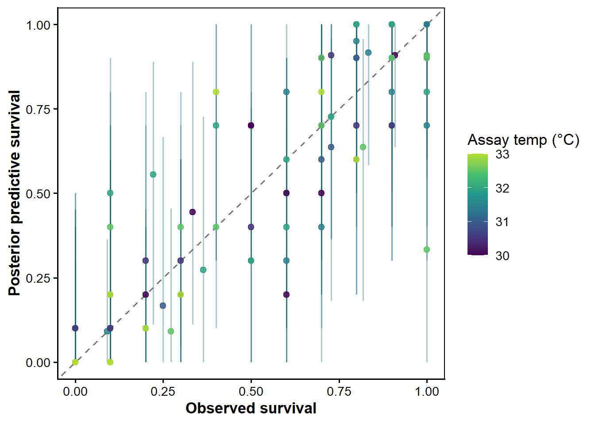
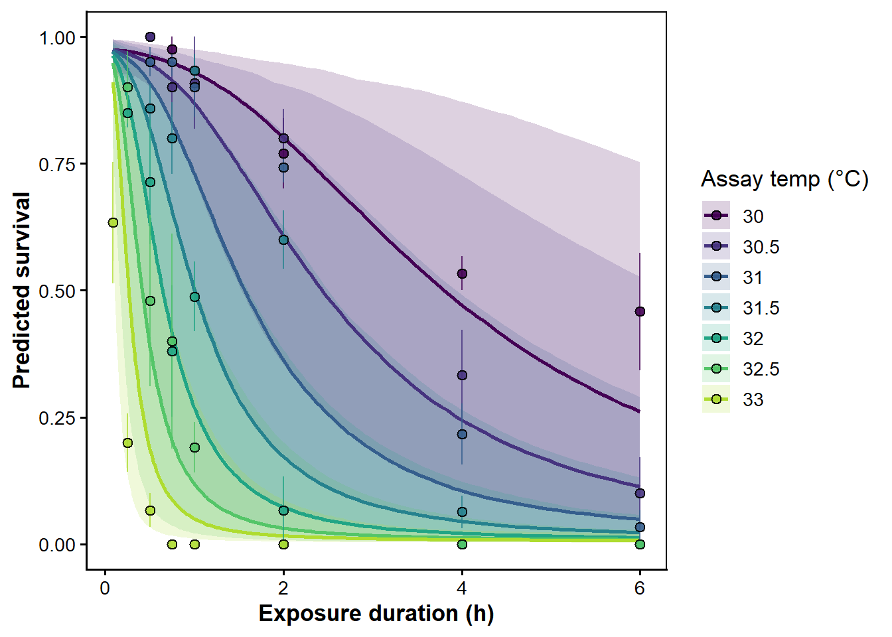
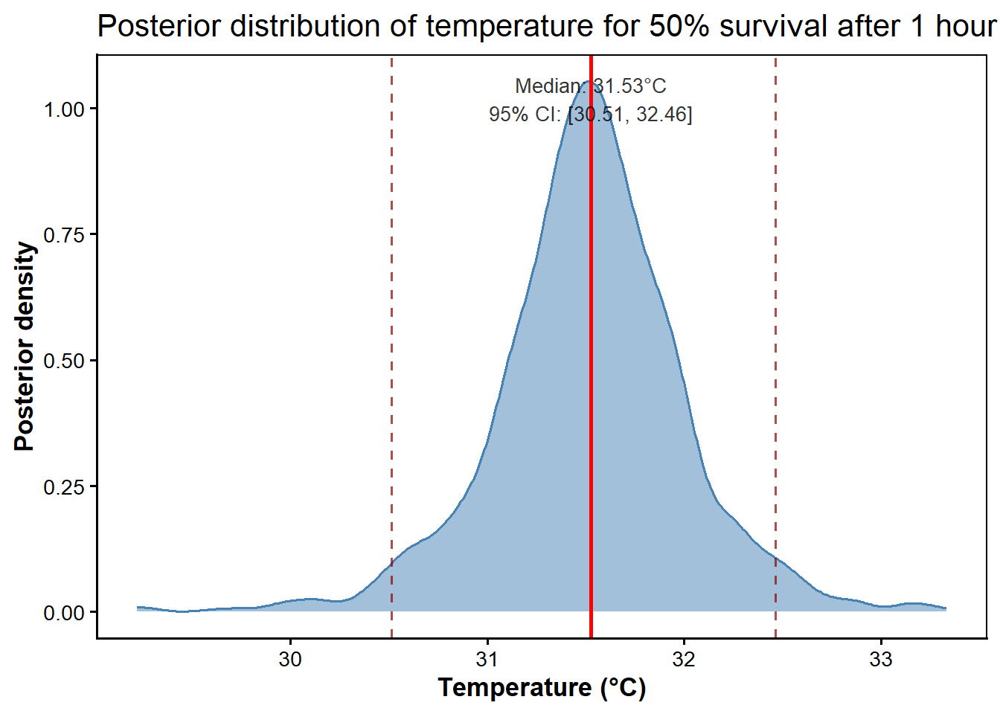
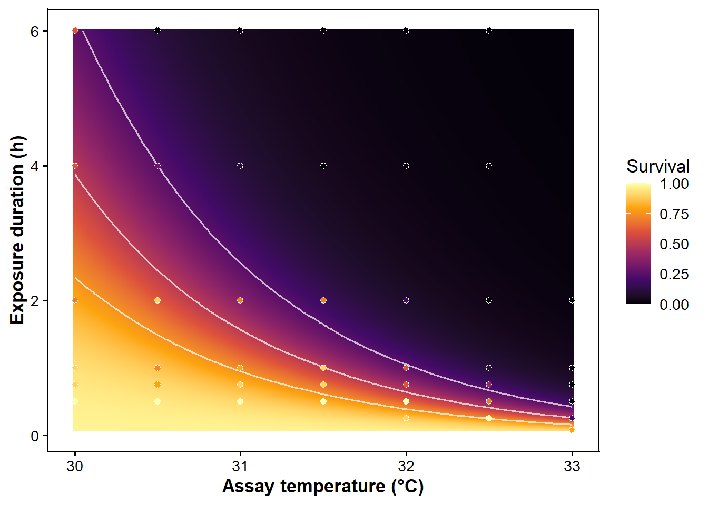

required_packages <- c(
"bayesplot",
"brms",
"dplyr",
"flextable",
"ggplot2",
"knitr",
"loo",
"patchwork",
"performance",
"posterior",
"purrr",
"readr",
"readxl",
"scales",
"tidyr"
)
missing_packages <- required_packages[
!vapply(required_packages, requireNamespace, logical(1), quietly = TRUE)
]
if (length(missing_packages) > 0) {
stop(
"Install these packages before rendering this notebook: ",
paste(missing_packages, collapse = ", ")
)
}
invisible(lapply(required_packages, library, character.only = TRUE))
project_root <- if (dir.exists("data") && dir.exists("R")) {
normalizePath(getwd(), winslash = "/", mustWork = TRUE)
} else {
normalizePath(file.path(getwd(), ".."), winslash = "/", mustWork = FALSE)
}
if (dir.exists(file.path(project_root, "data"))) {
knitr::opts_knit$set(root.dir = project_root)
}
if (!exists("params")) {
params <- list(
fit_model = FALSE,
show_sampler_progress = FALSE,
model_path = "Rdata/model_lethal_TDT_beta_binomial.RDS",
ndraws = 1000
)
} else if (is.null(params$show_sampler_progress)) {
params$show_sampler_progress <- FALSE
}
tdt_output_dir <- "Rdata"
tdt_fig_dir <- "fig"
dir.create(tdt_output_dir, recursive = TRUE, showWarnings = FALSE)
dir.create(tdt_fig_dir, recursive = TRUE, showWarnings = FALSE)
theme_tdt <- theme_classic(base_size = 13) +
theme(
axis.title = element_text(face = "bold"),
panel.border = element_rect(colour = "black", fill = NA, linewidth = 0.7),
legend.position = "right"
)
tdt_quantile <- function(x, probs = c(0.025, 0.5, 0.975)) {
stats::quantile(x, probs = probs, na.rm = TRUE, names = FALSE)
}
`%||%` <- function(x, y) {
if (is.null(x)) y else x
}
tdt_ft <- function(x, digits = 2, caption = NULL) {
x <- as.data.frame(x)
ft <- flextable::flextable(x)
ft <- flextable::theme_booktabs(ft)
ft <- flextable::fontsize(ft, size = 9, part = "all")
ft <- flextable::align(ft, align = "center", part = "all")
ft <- flextable::align(ft, j = 1, align = "left", part = "all")
num_cols <- names(x)[vapply(x, is.numeric, logical(1))]
if (length(num_cols) > 0) {
ft <- flextable::colformat_num(
ft,
j = num_cols,
digits = digits,
na_str = ""
)
}
if (!is.null(caption)) {
ft <- flextable::set_caption(ft, caption = caption)
}
flextable::autofit(ft)
}
format_interval <- function(median, lower, upper, digits = 2) {
paste0(
round(median, digits),
" [",
round(lower, digits),
", ",
round(upper, digits),
"]"
)
}Testing reusable Bayesian TDT functions
Purpose
This notebook turns the prototype code in tdt_problems.qmd and R/bayesian_TDT_shrimp.qmd into reusable functions that can be tested on the shrimp lethal TDT data before being reused for plant, cell, or multi-species case studies. The functions expect exposure duration in hours. Plotting and tables can convert hours to minutes when needed. The functions are written around one analysis pattern:
- Prepare survival-count data in a standard format.
- Fit a joint Bayesian 4-parameter logistic model to the raw counts.
- Use a beta-binomial likelihood for overdispersion instead of an observation-level random effect.
- Derive survival curves, TDT curves, classical TDT summaries, tolerance temperatures for fixed exposure durations, TDT landscapes, and heat-injury predictions from the fitted model.
When a grouping variable such as species, life stage, plant line, or cell line is supplied as category, the model estimates temp_c * category by default and all derived TDT quantities are summarised separately for each category.
The fitting chunk is deliberately switched off by default through params$fit_model. Set it to true in the YAML when you want to run the beta-binomial model.
Setup
Function Library
Small Helpers
tdt_beta_binomial_family <- function() {
brms::custom_family(
"tdt_beta_binomial",
dpars = c("mu", "phi"),
links = c("logit", "identity"),
lb = c(NA, 0),
type = "int",
vars = "vint1[n]"
)
}
tdt_beta_binomial_stanvars <- function() {
brms::stanvar(
scode = "
real tdt_beta_binomial_lpmf(int y, real mu, real phi, int trials) {
return beta_binomial_lpmf(
y | trials, mu * phi, (1 - mu) * phi
);
}
",
block = "functions"
)
}
tdt_dpar_by_obs <- function(x, i) {
if (is.null(dim(x))) {
return(x)
}
if (ncol(x) == 1L) {
return(x[, 1L])
}
x[, i]
}
posterior_predict_tdt_beta_binomial <- function(i, prep, ...) {
mu <- tdt_dpar_by_obs(prep$dpars$mu, i)
phi <- tdt_dpar_by_obs(prep$dpars$phi, i)
trials <- prep$data$vint1[i]
p_draw <- stats::rbeta(prep$ndraws, mu * phi, (1 - mu) * phi)
stats::rbinom(prep$ndraws, size = trials, prob = p_draw)
}
posterior_epred_tdt_beta_binomial <- function(prep) {
mu <- prep$dpars$mu
trials <- prep$data$vint1
sweep(mu, 2, trials, `*`)
}
log_lik_tdt_beta_binomial <- function(i, prep) {
mu <- tdt_dpar_by_obs(prep$dpars$mu, i)
phi <- tdt_dpar_by_obs(prep$dpars$phi, i)
trials <- prep$data$vint1[i]
y <- prep$data$Y[i]
lchoose(trials, y) +
lbeta(y + mu * phi, trials - y + (1 - mu) * phi) -
lbeta(mu * phi, (1 - mu) * phi)
}
tdt_num <- function(x) {
formatC(x, digits = 16, format = "fg", flag = "#")
}
tdt_check_columns <- function(data, cols, arg_name = "columns") {
cols <- cols[!is.na(cols) & nzchar(cols)]
missing <- setdiff(cols, names(data))
if (length(missing) > 0) {
stop(
"Missing ", arg_name, ": ",
paste(missing, collapse = ", "),
call. = FALSE
)
}
invisible(TRUE)
}
tdt_format_random_effects <- function(random_effects = NULL) {
if (is.null(random_effects) || length(random_effects) == 0) {
return(character())
}
vapply(
random_effects,
function(term) {
term <- trimws(term)
if (grepl("^\\(", term)) {
term
} else {
paste0("(1 | ", term, ")")
}
},
character(1)
)
}
tdt_random_effect_variables <- function(random_effects = NULL) {
terms <- tdt_format_random_effects(random_effects)
unique(unlist(lapply(terms, function(term) {
vars <- all.vars(stats::as.formula(paste("~", term)))
vars[vars != "1"]
})))
}
tdt_mid_covariate_variables <- function(mid_covariates = NULL) {
if (is.null(mid_covariates) || length(mid_covariates) == 0) {
return(character())
}
unique(all.vars(stats::as.formula(
paste("~", paste(mid_covariates, collapse = " + "))
)))
}
clock_to_minutes <- function(x) {
if (inherits(x, "POSIXt")) {
return(
as.numeric(format(x, "%H")) * 60 +
as.numeric(format(x, "%M")) +
as.numeric(format(x, "%S")) / 60
)
}
if (inherits(x, "hms") || inherits(x, "difftime")) {
return(as.numeric(x, units = "mins"))
}
if (is.numeric(x)) {
# Excel clock times often arrive as fractions of a day.
if (all(is.na(x) | (x >= 0 & x <= 1))) {
return(x * 24 * 60)
}
return(x)
}
x_chr <- as.character(x)
parsed <- suppressWarnings(as.POSIXct(x_chr, format = "%H:%M:%S", tz = "UTC"))
as.numeric(format(parsed, "%H")) * 60 +
as.numeric(format(parsed, "%M")) +
as.numeric(format(parsed, "%S")) / 60
}Data Preparation
prepare_tdt_survival_data() standardises the columns used by all downstream functions. The model uses duration in the unit supplied by the dataset; for the shrimp data that unit is hours. Later plotting functions use time_multiplier when we want to show results in minutes.
# prepare_tdt_survival_data ---------------------------------------------------
# Standardise raw experimental records into the format expected by all
# downstream fitting and prediction functions. This is the single entry
# point for data: everything downstream assumes the standard column names
# produced here (assay_temp, duration, logd, temp_c, n_total, n_surv,
# n_dead, survival).
#
# @param data Raw data frame or tibble.
# @param temp String: column name of the assay temperature in °C.
# @param duration String: column name of the exposure duration. The
# unit is whatever is in the data; document it with
# duration_unit so downstream callers know what
# time_multiplier to use for minute-scale plots.
# @param n_total String: column name for total individuals per
# experimental unit (well, cup, tank).
# @param n_surv String or NULL: column of survivor counts. Supply
# exactly one of n_surv, n_dead, survival, mortality.
# @param n_dead String or NULL: column of death counts. Converted
# to n_surv internally via n_surv = n_total - n_dead.
# @param survival String or NULL: column of survival proportions [0,1].
# Converted to integer counts.
# @param mortality String or NULL: column of mortality proportions [0,1].
# Converted to n_surv = round((1 - mortality) * n_total).
# @param category String or NULL: optional grouping factor column
# (e.g. "species", "life_stage"). Converted to a
# factor; levels are preserved for prediction grids.
# @param random_effects Character vector or NULL: grouping variables for
# random effects (e.g. c("Date", "Tank")). These
# columns are converted to factors.
# @param duration_unit String label for the duration column's unit.
# Stored in metadata; not used for any computation.
# Default "hours".
# @param temp_mean Numeric or NULL: value to subtract from assay_temp
# to form the centred covariate temp_c. If NULL
# (default), the mean of assay_temp in the filtered
# data is used. Pass a fixed value to align multiple
# datasets to the same centre.
#
# @return A tibble with standardised columns plus a "tdt_meta" attribute
# list storing temp_mean, duration_unit, category, and
# random_effects for use by downstream functions.
prepare_tdt_survival_data <- function(data,
temp,
duration,
n_total,
n_surv = NULL,
n_dead = NULL,
survival = NULL,
mortality = NULL,
category = NULL,
random_effects = NULL,
duration_unit = "hours",
temp_mean = NULL) {
needed <- c(temp, duration, n_total, n_surv, n_dead, survival, mortality,
category, tdt_random_effect_variables(random_effects))
tdt_check_columns(data, needed, "input columns")
if (sum(!vapply(list(n_surv, n_dead, survival, mortality), is.null, logical(1))) != 1) {
stop(
"Supply exactly one of n_surv, n_dead, survival, or mortality.",
call. = FALSE
)
}
out <- as.data.frame(data)
out$n_total <- as.integer(round(as.numeric(out[[n_total]])))
if (!is.null(n_surv)) {
out$n_surv <- as.integer(round(as.numeric(out[[n_surv]])))
}
if (!is.null(n_dead)) {
out$n_surv <- out$n_total - as.integer(round(as.numeric(out[[n_dead]])))
}
if (!is.null(survival)) {
prop_surv <- pmin(pmax(as.numeric(out[[survival]]), 0), 1)
out$n_surv <- as.integer(round(prop_surv * out$n_total))
}
if (!is.null(mortality)) {
prop_surv <- 1 - pmin(pmax(as.numeric(out[[mortality]]), 0), 1)
out$n_surv <- as.integer(round(prop_surv * out$n_total))
}
out$n_surv <- pmin(pmax(out$n_surv, 0), out$n_total)
out$n_dead <- out$n_total - out$n_surv
out$survival <- out$n_surv / out$n_total
out$assay_temp <- as.numeric(out[[temp]])
out$duration <- as.numeric(out[[duration]])
out$logd <- log10(out$duration)
out <- out %>%
dplyr::filter(
is.finite(n_total),
is.finite(n_surv),
is.finite(assay_temp),
is.finite(duration),
n_total > 0,
duration > 0
)
if (is.null(temp_mean)) {
temp_mean <- mean(out$assay_temp, na.rm = TRUE)
}
out$temp_c <- out$assay_temp - temp_mean
if (!is.null(category)) {
out[[category]] <- factor(out[[category]])
}
for (re_var in tdt_random_effect_variables(random_effects)) {
out[[re_var]] <- factor(out[[re_var]])
}
attr(out, "tdt_meta") <- list(
temp_mean = temp_mean,
duration_unit = duration_unit,
category = category,
random_effects = random_effects
)
tibble::as_tibble(out)
}Fitting A Beta-Binomial Bayesian 4PL
The survival curve is
p_surv = low + (up - low) / (1 + exp(k * (log10(duration) - mid)))with k = exp(logk), a bounded lower asymptote, and a bounded upper asymptote. The midpoint mid is where temperature, covariates, and random effects enter.
Unlike the prototype shrimp model, this implementation uses a beta-binomial likelihood through a custom brms family and removes the observation-level random effect.
The default priors are weak and not estimated from the dataset being analysed. On the probability scale, the lower asymptote is constrained to (0, 0.5) and is centred near 0.02; the upper asymptote is constrained to (0.5, 1) and is centred near 0.98. The midpoint prior is centred on log10(duration) = 0.5 with a broad scale, which says only that the threshold exposure is probably within a very wide range around the supplied duration unit.
# make_tdt_4pl_formula --------------------------------------------------------
# Build the brms nonlinear formula object for the beta-binomial 4PL model.
# The survival probability at a given log10(duration) and temperature is:
#
# p_surv = low + (up - low) / (1 + exp(k * (logd - mid)))
#
# where
# low = low_bounds[1] + inv_logit(lraw) * diff(low_bounds)
# up = up_bounds[1] + inv_logit(uraw) * diff(up_bounds)
# k = exp(logk)
# mid = intercept + slope * temp_c + [covariates] + [random effects]
#
# The formula is assembled as a brms::bf() nonlinear object; `eta` is the
# full logit-scale linear predictor fed to the beta-binomial family.
#
# @param category String or NULL: grouping factor column name.
# @param temp_by_category Logical. TRUE (default when category non-NULL):
# mid ~ temp_c * category (group-specific slopes).
# @param category_asymptotes Logical. TRUE (default): separate lraw/uraw
# per category level via `0 + category`.
# @param category_k Logical. TRUE (default): separate logk per
# category level.
# @param random_effects Character vector of grouping variables for random
# intercepts on mid. Bare names are wrapped in
# (1 | name) automatically.
# @param mid_covariates Character vector of additional fixed covariates
# appended to the mid sub-model right-hand side.
# @param low_bounds Numeric length-2 vector (min, max) for the lower
# asymptote. Default c(0.001, 0.499).
# @param up_bounds Numeric length-2 vector (min, max) for the upper
# asymptote. Default c(0.501, 0.999).
#
# @return A brmsformula object (result of brms::bf()).
make_tdt_4pl_formula <- function(category = NULL,
temp_by_category = !is.null(category),
category_asymptotes = !is.null(category),
category_k = !is.null(category),
random_effects = NULL,
mid_covariates = NULL,
low_bounds = c(0.001, 0.499),
up_bounds = c(0.501, 0.999)) {
low_min <- low_bounds[1]
low_width <- diff(low_bounds)
up_min <- up_bounds[1]
up_width <- diff(up_bounds)
low_expr <- paste0(
"(",
tdt_num(low_min),
" + inv_logit(lraw) * ",
tdt_num(low_width),
")"
)
up_expr <- paste0(
"(",
tdt_num(up_min),
" + inv_logit(uraw) * ",
tdt_num(up_width),
")"
)
eta_expr <- paste0(
"eta ~ logit(",
low_expr,
" + (",
up_expr,
" - ",
low_expr,
") / (1 + exp(",
"exp(logk) * (logd - mid)",
")))"
)
lraw_rhs <- if (!is.null(category) && category_asymptotes) {
paste0("0 + ", category)
} else {
"1"
}
uraw_rhs <- lraw_rhs
logk_rhs <- if (!is.null(category) && category_k) {
paste0("0 + ", category)
} else {
"1"
}
mid_terms <- if (!is.null(category) && temp_by_category) {
paste0("temp_c * ", category)
} else if (!is.null(category)) {
c("temp_c", category)
} else {
"temp_c"
}
mid_terms <- c(mid_terms, mid_covariates, tdt_format_random_effects(random_effects))
mid_rhs <- paste(mid_terms, collapse = " + ")
formula_parts <- list(
stats::as.formula("n_surv | vint(n_total) ~ eta"),
brms::nlf(stats::as.formula(eta_expr)),
brms::lf(stats::as.formula(paste("lraw ~", lraw_rhs))),
brms::lf(stats::as.formula(paste("uraw ~", uraw_rhs))),
brms::lf(stats::as.formula(paste("logk ~", logk_rhs))),
brms::lf(stats::as.formula(paste("mid ~", mid_rhs)))
)
do.call(brms::bf, c(formula_parts, list(nl = TRUE)))
}
# make_tdt_4pl_priors ---------------------------------------------------------
# Build the brms prior object for the beta-binomial 4PL model. Priors are
# weakly informative and centred on plausible biological values. They do NOT
# adapt to the data being analysed — that would be empirical Bayes and would
# understate uncertainty.
#
# @param data Prepared data frame from prepare_tdt_survival_data().
# Only logd (log10 duration) is used to centre the
# midpoint prior.
# @param random_effects Character vector of random-effect grouping variables
# (same as the argument passed to fit_tdt_4pl()).
# Used to add exponential SD priors for each group.
# @param prior_random_sd Stan prior string for random-effect standard
# deviations. Default "exponential(2)" puts most mass
# below ~0.35 log10(h), a wide but regularising range.
# @param prior_phi Stan prior string for the beta-binomial precision
# parameter phi. Default "gamma(2, 0.1)" has mean 20
# and a long right tail, accommodating overdispersion
# from mild to severe.
# @param low_bounds Numeric length-2 vector: (min, max) for the lower
# asymptote. Must match the bounds used in the
# formula. Default c(0.001, 0.499).
# @param up_bounds Numeric length-2 vector: (min, max) for the upper
# asymptote. Default c(0.501, 0.999).
#
# @return A brms prior object (list of brmsprior rows) ready to pass to brm().
make_tdt_4pl_priors <- function(data,
random_effects = NULL,
prior_random_sd = "exponential(2)",
prior_phi = "gamma(2, 0.1)",
low_bounds = c(0.001, 0.499),
up_bounds = c(0.501, 0.999)) {
mid_start <- median(data$logd, na.rm = TRUE)
# Compute prior centres that match the formula's inv-logit re-parameterisation:
# low = low_bounds[1] + inv_logit(lraw) * diff(low_bounds) ~ 0.02
# up = up_bounds[1] + inv_logit(uraw) * diff(up_bounds) ~ 0.98
lraw_mean <- qlogis((0.02 - low_bounds[1]) / diff(low_bounds))
uraw_mean <- qlogis((0.98 - up_bounds[1]) / diff(up_bounds))
logk_mean <- log(2)
priors <- c(
brms::set_prior(
paste0("normal(", tdt_num(lraw_mean), ", 1)"),
class = "b", nlpar = "lraw"
),
brms::set_prior(
paste0("normal(", tdt_num(uraw_mean), ", 1)"),
class = "b", nlpar = "uraw"
),
brms::set_prior(
paste0("normal(", tdt_num(logk_mean), ", 1)"),
class = "b", nlpar = "logk"
),
brms::set_prior(
paste0("normal(", tdt_num(mid_start), ", 1.5)"),
class = "b", nlpar = "mid", coef = "Intercept"
),
brms::set_prior(
"normal(0, 0.6)",
class = "b", nlpar = "mid"
),
brms::set_prior(
prior_phi,
class = "phi"
)
)
for (re_var in tdt_random_effect_variables(random_effects)) {
priors <- c(
priors,
brms::set_prior(
prior_random_sd,
class = "sd",
nlpar = "mid",
group = re_var
)
)
}
priors
}
# make_tdt_4pl_init -----------------------------------------------------------
# Build a per-chain initialisation closure for the beta-binomial 4PL model.
# Good starting values prevent Stan from hitting log(0) during adaptation,
# which occurs when the survival probability reaches exactly 0 or 1 (making
# logit undefined) or when phi is initialised in a degenerate region.
#
# The three root causes of the "log probability evaluates to log(0)" error
# that motivated this function:
# 1. Parameter names that Stan cannot match → random fallback inits in bad
# territory (fixed here by using brms R-level naming conventions).
# 2. Asymptote bounds that touch 0 or 1 → logit(p) = ±Inf (fixed in
# fit_tdt_4pl() by using c(0.001, 0.499) / c(0.501, 0.999) bounds).
# 3. phi not initialised → cmdstanr draws phi randomly on unconstrained
# scale; very small phi values can destabilise the beta-binomial (fixed
# by supplying phi = 5 as a moderate starting point).
#
# @param data Prepared data frame from prepare_tdt_survival_data().
# Must contain columns `logd` (log10 duration) and
# `survival` (proportion surviving).
# @param category Optional string: name of the grouping factor column.
# When supplied, one lraw/uraw/logk coefficient is
# generated per category level using the brms naming
# pattern b_<nlpar>_<category><level>. Default NULL
# (single-group model with intercept-only lraw/uraw/logk).
# @param low_bounds Numeric length-2 vector (min, max) for the lower
# asymptote. Must match the bounds used in
# make_tdt_4pl_formula(). Default c(0.001, 0.499).
# @param up_bounds Numeric length-2 vector (min, max) for the upper
# asymptote. Default c(0.501, 0.999).
#
# @return A zero-argument closure. Each call returns a named list of
# starting values. Names follow brms R-level conventions
# (e.g. b_lraw_Intercept, b_mid_temp_c) so that brms translates
# them correctly for both rstan and cmdstanr backends.
make_tdt_4pl_init <- function(data,
category = NULL,
mid_covariates = NULL,
low_bounds = c(0.001, 0.499),
up_bounds = c(0.501, 0.999)) {
# --- Compute init values consistent with the formula bounds -----------------
# The formula maps lraw -> low via:
# low = low_bounds[1] + inv_logit(lraw) * diff(low_bounds)
# Solving for lraw when low = 0.02 gives the expression below.
# Analogously for uraw when up = 0.98.
lraw_init <- qlogis((0.02 - low_bounds[1]) / diff(low_bounds))
uraw_init <- qlogis((0.98 - up_bounds[1]) / diff(up_bounds))
logk_init <- log(2) # k = 2 on natural scale: moderate initial steepness
# --- Midpoint: anchor to data with intermediate survival --------------------
# Use the median log10(duration) from observations where survival is
# between 5% and 95%. This places the sigmoid near the transition zone
# in the data rather than at an arbitrary value. Falls back to the
# overall median when all observations are near floor or ceiling.
dat_mid <- data %>%
dplyr::filter(is.finite(survival), survival > 0.05, survival < 0.95)
mid_init <- if (nrow(dat_mid) > 0) {
median(dat_mid$logd, na.rm = TRUE)
} else {
median(data$logd, na.rm = TRUE)
}
# --- Return the closure -----------------------------------------------------
# IMPORTANT: cmdstanr expects Stan-level parameter names, which differ from
# the R-level names used in brms posterior summaries:
#
# Stan name | R-level name(s)
# ------------|-------------------------------------
# b_lraw | b_lraw_Intercept (length-1 vector)
# b_uraw | b_uraw_Intercept
# b_logk | b_logk_Intercept
# b_mid | b_mid_Intercept + b_mid_temp_c (length-2 vector)
# phi | phi
#
# Passing R-level names to cmdstanr causes a "missing init" warning and
# falls back to random inits, which can trigger log(0) errors.
# Number of fixed coefficients in the mid sub-model:
# 1 (intercept) + 1 (temp_c) + n_extra_covariates
# For models with category, each category level adds a main effect and
# a temp_c interaction, giving 2 * n_cats total coefficients.
n_extra <- if (!is.null(mid_covariates)) length(mid_covariates) else 0L
if (is.null(category)) {
# Single-group model: b_mid = [intercept, temp_c, (optional covariates)]
n_mid_dim <- 2L + n_extra
function() {
list(
b_lraw = array(lraw_init, dim = 1),
b_uraw = array(uraw_init, dim = 1),
b_logk = array(logk_init, dim = 1),
b_mid = array(c(mid_init, rep(0, n_mid_dim - 1L)), dim = n_mid_dim),
phi = 5 # scalar: Stan declares phi as real<lower=0>, not a vector
)
}
} else {
# Multi-group model: lraw/uraw/logk have k elements (one per level).
# b_mid for `temp_c * category` with k levels has 2k coefficients
# (k intercept contrasts + k temp_c slopes, with treatment coding).
cats <- levels(data[[category]])
n_cats <- length(cats)
n_mid_dim <- 2L * n_cats + n_extra
function() {
list(
b_lraw = array(rep(lraw_init, n_cats), dim = n_cats),
b_uraw = array(rep(uraw_init, n_cats), dim = n_cats),
b_logk = array(rep(logk_init, n_cats), dim = n_cats),
b_mid = array(c(mid_init, rep(0, n_mid_dim - 1L)), dim = n_mid_dim),
phi = 5
)
}
}
}
# fit_tdt_4pl -----------------------------------------------------------------
# Fit (or only specify) a Bayesian beta-binomial 4PL thermal death time model
# using brms. Can also serve as a workflow factory (fit = FALSE) that returns
# the formula, priors, and data without sampling — useful for prior
# predictive checks and formula inspection.
#
# @param data Prepared data frame from
# prepare_tdt_survival_data(). Must contain
# columns n_surv, n_total, logd, temp_c, assay_temp,
# duration, and survival.
# @param category Optional string: name of a factor column in data
# for multi-group modelling (e.g. "species",
# "life_stage", "cell_line"). When supplied,
# mid ~ temp_c * category (by default) so each
# group gets its own temperature slope.
# @param temp_by_category Logical. If TRUE (default when category is
# supplied), fit mid ~ temp_c * category.
# Set FALSE to share the temperature slope across
# groups (mid ~ temp_c + category).
# @param category_asymptotes Logical. If TRUE (default when category is
# supplied), fit separate lower and upper
# asymptotes per category level via
# lraw ~ 0 + category and uraw ~ 0 + category.
# @param category_k Logical. If TRUE (default when category is
# supplied), fit a separate steepness parameter k
# per category via logk ~ 0 + category.
# @param random_effects Character vector of grouping variable names for
# random intercepts on mid. Can be bare variable
# names (e.g. c("Date", "Tank")) or full
# lme4-style terms (e.g. "(1 | Date)").
# @param mid_covariates Character vector of additional fixed covariates
# to add to the mid sub-model (e.g.
# c("body_mass_c", "start_min_c")).
# @param low_bounds Numeric length-2 vector: (min, max) for the
# lower asymptote. Must not include 0 exactly,
# because logit(0) = -Inf causes Stan to report
# "log probability evaluates to log(0)".
# Default c(0.001, 0.499).
# @param up_bounds Numeric length-2 vector: (min, max) for the
# upper asymptote. Must not include 1 exactly.
# Default c(0.501, 0.999).
# @param prior Optional brms prior object. If NULL (default),
# make_tdt_4pl_priors() builds weakly informative
# priors automatically.
# @param chains Number of MCMC chains. Default 4.
# @param cores Number of CPU cores for parallel chains.
# Defaults to chains.
# @param iter Total MCMC iterations per chain (including
# warmup). Default 4000.
# @param warmup Warmup iterations per chain. Default half of
# iter.
# @param seed Random seed for reproducibility. Default 123.
# @param backend Sampling backend: "cmdstanr" (recommended) or
# "rstan". Default "cmdstanr".
# @param control List of HMC control parameters passed to brm().
# Default list(adapt_delta = 0.995,
# max_treedepth = 15). Higher adapt_delta reduces
# divergent transitions at the cost of slower
# sampling.
# @param init Initial values for the sampler. If NULL
# (default), uses init = 0, which tells cmdstanr
# to start every parameter at 0 on the unconstrained
# scale (sd = 1, z = 0, phi = 1, b_* = 0 — all
# valid starting values). This avoids the
# "log probability evaluates to log(0)" error that
# arises when random-effect parameters (sd_1, z_1,
# etc.) receive bad random inits. Supply
# make_tdt_4pl_init(data, ...) here if you want
# data-informed starting values, but note that it
# does not cover random-effect parameters and so
# relies on cmdstanr's random inits for those.
# @param sample_prior Passed to brm(); "no" (default) fits the
# posterior; "only" draws from the prior
# predictive distribution.
# @param save_pars brms save_pars() object controlling which
# parameters are retained. Default saves all,
# enabling LOO-CV and reloo().
# @param file Optional file path (without extension) to cache
# the fitted model. If the file exists and
# overwrite = FALSE, the cached model is loaded.
# @param overwrite Logical. If TRUE, re-fit even when file exists.
# Default FALSE.
# @param fit Logical. If FALSE, return the workflow object
# (formula + priors + data) without fitting.
# Default TRUE.
# @param ... Additional arguments passed to brm().
#
# @return A list of class "tdt_4pl_workflow" with elements:
# $fit brmsfit object (NULL when fit = FALSE)
# $data the prepared data
# $formula the brms formula object
# $prior the prior object
# $meta metadata list (temp_mean, bounds, category, random_effects, etc.)
fit_tdt_4pl <- function(data,
category = NULL,
temp_by_category = !is.null(category),
category_asymptotes = !is.null(category),
category_k = !is.null(category),
random_effects = NULL,
mid_covariates = NULL,
low_bounds = c(0.001, 0.499),
up_bounds = c(0.501, 0.999),
prior = NULL,
chains = 4,
cores = chains,
iter = 4000,
warmup = floor(iter / 2),
seed = 123,
backend = "cmdstanr",
control = list(adapt_delta = 0.995,
max_treedepth = 15),
init = NULL,
sample_prior = "no",
save_pars = brms::save_pars(all = TRUE),
file = NULL,
overwrite = FALSE,
fit = TRUE,
...) {
meta <- attr(data, "tdt_meta")
if (is.null(meta)) {
meta <- list(
temp_mean = mean(data$assay_temp, na.rm = TRUE),
duration_unit = "model_units",
category = category,
random_effects = random_effects
)
}
formula <- make_tdt_4pl_formula(
category = category,
temp_by_category = temp_by_category,
category_asymptotes = category_asymptotes,
category_k = category_k,
random_effects = random_effects,
mid_covariates = mid_covariates,
low_bounds = low_bounds,
up_bounds = up_bounds
)
if (is.null(prior)) {
prior <- make_tdt_4pl_priors(
data = data,
random_effects = random_effects,
low_bounds = low_bounds,
up_bounds = up_bounds
)
}
workflow <- list(
fit = NULL,
data = data,
formula = formula,
prior = prior,
meta = c(
meta,
list(
category = category,
random_effects = random_effects,
mid_covariates = mid_covariates,
low_bounds = low_bounds,
up_bounds = up_bounds
)
)
)
class(workflow) <- "tdt_4pl_workflow"
if (!fit) {
return(workflow)
}
if (!is.null(file) && file.exists(file) && !overwrite) {
workflow$fit <- readRDS(file)
return(workflow)
}
if (is.null(init)) {
# Use init = 0: cmdstanr initialises every parameter to 0 on the
# unconstrained scale. This maps to sd = exp(0) = 1, z = 0, phi = 1,
# b_* = 0 — all valid starting values. A custom function
# make_tdt_4pl_init() exists for data-informed starts, but it does not
# know the Stan names for random-effect parameters (sd_1, z_1, sd_2, z_2,
# ...) so those fall back to random draws in Uniform(-2, 2) unconstrained,
# which can push the beta-binomial log-probability to -Inf on some chains.
init <- 0
}
workflow$fit <- brms::brm(
formula = formula,
data = data,
family = tdt_beta_binomial_family(),
prior = prior,
stanvars = tdt_beta_binomial_stanvars(),
chains = chains,
cores = cores,
iter = iter,
warmup = warmup,
seed = seed,
backend = backend,
control = control,
init = init,
sample_prior = sample_prior,
save_pars = save_pars,
...
)
if (!is.null(file)) {
dir.create(dirname(file), recursive = TRUE, showWarnings = FALSE)
saveRDS(workflow$fit, file)
}
workflow
}Prediction Grids
# tdt_has_fit -----------------------------------------------------------------
# Convenience predicate: TRUE when workflow is a fitted tdt_4pl_workflow.
#
# @param workflow Object returned by fit_tdt_4pl().
# @return Logical scalar.
tdt_has_fit <- function(workflow) {
inherits(workflow, "tdt_4pl_workflow") && !is.null(workflow$fit)
}
# new_tdt_grid ----------------------------------------------------------------
# Build a prediction grid (newdata) covering all combinations of temperatures,
# durations, and (optionally) category levels. Adds the derived columns
# logd, temp_c, n_total that the model requires and fills random-effect and
# covariate columns with sensible defaults (first factor level / median).
#
# @param workflow tdt_4pl_workflow object (fitted or spec-only).
# @param temps Numeric vector of assay temperatures (°C).
# @param durations Numeric vector of exposure durations (same unit as
# the training data).
# @param categories Character vector of category levels to include, or
# NULL to include all levels from the training data.
# @param covariate_values Named list of values to pin continuous mid-covariates
# to (e.g. list(body_mass_c = 0)). Any covariate not
# in this list is set to 0 if its name ends in "_c"
# (centred), otherwise to its training-data median.
# @param n_total Integer passed as the trials column. If NULL
# (default), uses the median of the training data.
#
# @return A tibble with one row per (temp, duration[, category]) combination.
new_tdt_grid <- function(workflow,
temps,
durations,
categories = NULL,
covariate_values = list(),
n_total = NULL) {
data <- workflow$data
meta <- workflow$meta
category <- meta$category
if (is.null(n_total)) {
n_total <- as.integer(round(stats::median(data$n_total, na.rm = TRUE)))
}
if (!is.null(category)) {
if (is.null(categories)) {
categories <- levels(data[[category]])
}
nd <- expand.grid(
assay_temp = temps,
duration = durations,
category_value = categories,
KEEP.OUT.ATTRS = FALSE,
stringsAsFactors = FALSE
)
nd[[category]] <- factor(nd$category_value, levels = levels(data[[category]]))
nd$category_value <- NULL
} else {
nd <- expand.grid(
assay_temp = temps,
duration = durations,
KEEP.OUT.ATTRS = FALSE,
stringsAsFactors = FALSE
)
}
nd$n_total <- n_total
nd$logd <- log10(nd$duration)
nd$temp_c <- nd$assay_temp - meta$temp_mean
for (re_var in tdt_random_effect_variables(meta$random_effects)) {
if (re_var %in% names(data)) {
if (is.factor(data[[re_var]])) {
nd[[re_var]] <- factor(levels(data[[re_var]])[1], levels = levels(data[[re_var]]))
} else {
nd[[re_var]] <- data[[re_var]][1]
}
}
}
covariate_vars <- tdt_mid_covariate_variables(meta$mid_covariates)
for (cv in covariate_vars) {
if (cv %in% names(covariate_values)) {
nd[[cv]] <- covariate_values[[cv]]
} else if (cv %in% names(data) && is.numeric(data[[cv]])) {
if (grepl("_c$", cv)) {
nd[[cv]] <- 0
} else {
nd[[cv]] <- stats::median(data[[cv]], na.rm = TRUE)
}
}
}
tibble::as_tibble(nd)
}
# posterior_linpred_tdt -------------------------------------------------------
# Thin wrapper around brms::posterior_linpred() with transform = TRUE so it
# returns draws on the probability scale (not the logit scale).
#
# @param workflow Fitted tdt_4pl_workflow object.
# @param newdata Prediction grid from new_tdt_grid() or equivalent.
# @param ndraws Integer or NULL: number of posterior draws to sample.
# NULL uses all available draws.
# @param re_formula Formula for random effects in predictions. NA (default)
# marginalises over random effects (population-level
# prediction); NULL includes them.
#
# @return Numeric matrix [ndraws x nrow(newdata)] of survival probabilities.
posterior_linpred_tdt <- function(workflow,
newdata,
ndraws = NULL,
re_formula = NA) {
if (!tdt_has_fit(workflow)) {
stop("workflow$fit is NULL. Fit or load the model first.", call. = FALSE)
}
args <- list(
object = workflow$fit,
newdata = newdata,
re_formula = re_formula,
transform = TRUE
)
if (!is.null(ndraws)) {
args$ndraws <- ndraws
}
do.call(brms::posterior_linpred, args)
}Survival Curves
summarise_observed_survival <- function(observed) {
observed %>%
dplyr::group_by(assay_temp, duration) %>%
dplyr::summarise(
survival_mean = mean(survival, na.rm = TRUE),
survival_se = stats::sd(survival, na.rm = TRUE) / sqrt(dplyr::n()),
n_units = dplyr::n(),
n_total_sum = sum(n_total, na.rm = TRUE),
.groups = "drop"
) %>%
dplyr::mutate(
survival_se = dplyr::if_else(
is.finite(survival_se),
survival_se,
0
),
survival_lower = pmax(0, survival_mean - survival_se),
survival_upper = pmin(1, survival_mean + survival_se)
)
}
# predict_survival_curves -----------------------------------------------------
# Compute posterior survival-curve summaries over a grid of temperatures and
# durations. Returns the median and 95% credible interval for each grid
# point so they can be plotted with plot_survival_curves().
#
# @param workflow Fitted tdt_4pl_workflow object.
# @param temps Numeric vector of temperatures (°C) to predict at.
# @param durations Numeric vector of durations or NULL. NULL (default)
# uses 250 log-spaced values spanning the training
# data range.
# @param categories Character vector of category levels to include,
# or NULL (all levels).
# @param covariate_values Named list for pinning mid-covariates.
# @param ndraws Number of posterior draws. Default 1000.
# @param probs Quantile probabilities for the credible interval.
# Default c(0.025, 0.5, 0.975).
#
# @return Named list: $summary (tibble with columns survival_lower,
# survival_median, survival_upper), $draws (raw draw matrix),
# $newdata (the prediction grid).
predict_survival_curves <- function(workflow,
temps,
durations = NULL,
categories = NULL,
covariate_values = list(),
ndraws = 1000,
probs = c(0.025, 0.5, 0.975)) {
if (is.null(durations)) {
duration_range <- range(workflow$data$duration, na.rm = TRUE)
durations <- exp(seq(log(duration_range[1]), log(duration_range[2]), length.out = 250))
}
nd <- new_tdt_grid(
workflow = workflow,
temps = temps,
durations = durations,
categories = categories,
covariate_values = covariate_values
)
pred <- posterior_linpred_tdt(workflow, nd, ndraws = ndraws, re_formula = NA)
q <- apply(pred, 2, tdt_quantile, probs = probs)
nd$survival_lower <- q[1, ]
nd$survival_median <- q[2, ]
nd$survival_upper <- q[3, ]
list(summary = nd, draws = pred, newdata = nd)
}
plot_survival_curves <- function(pred,
observed = NULL,
category = NULL,
observed_summary = TRUE) {
df <- pred$summary %>%
dplyr::mutate(temp_f = factor(assay_temp, levels = sort(unique(assay_temp))))
p <- ggplot(
df,
aes(
x = duration,
y = survival_median,
colour = temp_f,
fill = temp_f,
group = temp_f
)
) +
geom_ribbon(aes(ymin = survival_lower, ymax = survival_upper),
alpha = 0.18, colour = NA) +
geom_line(linewidth = 0.9) +
scale_y_continuous(limits = c(0, 1)) +
scale_colour_viridis_d(option = "D", end = 0.88, name = "Assay temp (°C)") +
scale_fill_viridis_d(option = "D", end = 0.88, name = "Assay temp (°C)") +
labs(
x = "Exposure duration (h)",
y = "Predicted survival"
) +
theme_tdt +
theme(legend.position = "right")
if (!is.null(observed)) {
if (observed_summary) {
obs <- summarise_observed_survival(observed) %>%
dplyr::mutate(temp_f = factor(assay_temp, levels = levels(df$temp_f)))
p <- p +
geom_errorbar(
data = obs,
aes(
x = duration,
ymin = survival_lower,
ymax = survival_upper,
colour = temp_f
),
inherit.aes = FALSE,
width = 0,
alpha = 0.8,
linewidth = 0.45
) +
geom_point(
data = obs,
aes(x = duration, y = survival_mean, fill = temp_f),
inherit.aes = FALSE,
shape = 21,
colour = "black",
alpha = 0.9,
size = 2.2
)
} else {
obs <- observed %>%
dplyr::mutate(temp_f = factor(assay_temp, levels = levels(df$temp_f)))
p <- p +
geom_point(
data = obs,
aes(x = duration, y = survival, fill = temp_f),
inherit.aes = FALSE,
shape = 21,
colour = "black",
alpha = 0.55,
size = 1.6
)
}
}
if (!is.null(category)) {
p <- p +
aes(group = interaction(temp_f, .data[[category]])) +
facet_wrap(stats::as.formula(paste("~", category)))
}
p
}Threshold Extraction, TDT Curves, And Classical Summaries
These functions replace the hard-coded species helpers in tdt_problems.qmd. They work by numerically inverting posterior predictions, so they also work for models with covariates, random effects, and temp_c * category grouping interactions. The tradeoff is that the duration grid must be broad enough to contain the threshold.
threshold_x_by_draw <- function(pred_mat, x, target) {
ord <- order(x)
x <- x[ord]
pred_mat <- pred_mat[, ord, drop = FALSE]
out <- rep(NA_real_, nrow(pred_mat))
for (i in seq_len(nrow(pred_mat))) {
y <- as.numeric(pred_mat[i, ])
if (all(is.na(y))) {
next
}
if (min(y, na.rm = TRUE) > target || max(y, na.rm = TRUE) < target) {
next
}
exact <- which(abs(y - target) < 1e-12)
if (length(exact) > 0) {
out[i] <- x[exact[1]]
next
}
crossing <- which((y[-length(y)] - target) * (y[-1] - target) <= 0)
if (length(crossing) == 0) {
out[i] <- x[which.min(abs(y - target))]
next
}
j <- crossing[1]
x1 <- x[j]
x2 <- x[j + 1]
y1 <- y[j]
y2 <- y[j + 1]
if (!is.finite(y1) || !is.finite(y2) || abs(y2 - y1) < 1e-12) {
out[i] <- mean(c(x1, x2))
} else {
out[i] <- x1 + (target - y1) * (x2 - x1) / (y2 - y1)
}
}
out
}
target_for_category <- function(target_survival, category_value) {
if (length(target_survival) == 1 && is.null(names(target_survival))) {
return(as.numeric(target_survival))
}
if (is.null(names(target_survival))) {
stop(
"When target_survival has more than one value, it must be a named vector.",
call. = FALSE
)
}
key <- as.character(category_value)
if (!key %in% names(target_survival)) {
stop(
"No target_survival value supplied for category: ",
key,
call. = FALSE
)
}
as.numeric(target_survival[[key]])
}
# derive_ltx_curve ------------------------------------------------------------
# Derive the time-to-X%-survival (LTx) curve as a function of temperature by
# numerically inverting posterior survival predictions. For each posterior
# draw and each temperature, the function finds the duration at which the
# predicted survival curve crosses the target_survival threshold using linear
# interpolation over a fine duration grid.
#
# @param workflow Fitted tdt_4pl_workflow object.
# @param temp_grid Numeric vector of temperatures (°C) to evaluate.
# @param duration_grid Numeric vector of durations (model units) over which
# to search for the threshold. NULL (default) uses
# 350 log-spaced values from 1/5 × min to 5 × max of
# the training durations — wide enough for most cases.
# @param target_survival Numeric scalar or named numeric vector. The survival
# probability whose crossing time is sought (e.g. 0.5
# for LT50). When grouped, a named vector
# c(species_A = 0.5, species_B = 0.6) sets
# group-specific thresholds.
# @param categories Character vector of category levels, or NULL.
# @param covariate_values Named list for pinning mid-covariates.
# @param ndraws Number of posterior draws. Default 1000.
# @param probs Quantile probabilities for the summary.
# Default c(0.025, 0.5, 0.975).
# @param time_multiplier Multiply model-unit durations by this factor for
# output (e.g. 60 to convert hours to minutes).
# Default 60.
# @param output_time_unit String label for the output unit. Default "min".
#
# @return Named list: $draws (per-draw thresholds), $summary (quantile
# summary by category and temperature), $target_survival,
# $time_multiplier, $output_time_unit.
derive_ltx_curve <- function(workflow,
temp_grid,
duration_grid = NULL,
target_survival = 0.5,
categories = NULL,
covariate_values = list(),
ndraws = 1000,
probs = c(0.025, 0.5, 0.975),
time_multiplier = 60,
output_time_unit = "min") {
if (is.null(duration_grid)) {
duration_range <- range(workflow$data$duration, na.rm = TRUE)
duration_grid <- 10^seq(
log10(duration_range[1] / 5),
log10(duration_range[2] * 5),
length.out = 350
)
}
nd <- new_tdt_grid(
workflow = workflow,
temps = temp_grid,
durations = duration_grid,
categories = categories,
covariate_values = covariate_values
)
pred <- posterior_linpred_tdt(workflow, nd, ndraws = ndraws, re_formula = NA)
category <- workflow$meta$category
if (is.null(category)) {
groups <- nd %>%
dplyr::distinct(assay_temp) %>%
dplyr::mutate(category_value = "all")
} else {
groups <- nd %>%
dplyr::distinct(assay_temp, category_value = .data[[category]])
}
draw_list <- vector("list", nrow(groups))
for (i in seq_len(nrow(groups))) {
temp_i <- groups$assay_temp[i]
category_i <- groups$category_value[i]
idx <- nd$assay_temp == temp_i
if (!is.null(category)) {
idx <- idx & as.character(nd[[category]]) == as.character(category_i)
}
threshold_duration <- threshold_x_by_draw(
pred_mat = pred[, idx, drop = FALSE],
x = nd$duration[idx],
target = target_for_category(target_survival, category_i)
)
draw_list[[i]] <- data.frame(
.draw = seq_along(threshold_duration),
assay_temp = temp_i,
category = category_i,
target_survival = target_for_category(target_survival, category_i),
duration_model_units = threshold_duration,
duration_output_units = threshold_duration * time_multiplier
)
}
draws <- dplyr::bind_rows(draw_list) %>%
dplyr::filter(is.finite(duration_model_units), duration_model_units > 0)
summary <- draws %>%
dplyr::group_by(category, target_survival, assay_temp) %>%
dplyr::summarise(
duration_lower = stats::quantile(duration_output_units, probs[1], na.rm = TRUE),
duration_median = stats::quantile(duration_output_units, probs[2], na.rm = TRUE),
duration_upper = stats::quantile(duration_output_units, probs[3], na.rm = TRUE),
.groups = "drop"
)
list(
draws = draws,
summary = summary,
target_survival = target_survival,
time_multiplier = time_multiplier,
output_time_unit = output_time_unit
)
}
LT50_T_curve <- function(workflow, T_grid, ...) {
derive_ltx_curve(
workflow = workflow,
temp_grid = T_grid,
target_survival = 0.5,
...
)
}
bind_ltx_curves <- function(..., output_time_unit = NULL) {
curves <- list(...)
if (length(curves) == 0) {
stop("Supply at least one LTx curve.", call. = FALSE)
}
list(
draws = dplyr::bind_rows(lapply(curves, `[[`, "draws")),
summary = dplyr::bind_rows(lapply(curves, `[[`, "summary")),
target_survival = unique(unlist(lapply(curves, `[[`, "target_survival"))),
time_multiplier = curves[[1]]$time_multiplier,
output_time_unit = output_time_unit %||% curves[[1]]$output_time_unit
)
}
# derive_tdt_parameters -------------------------------------------------------
# Fit a log-linear regression of log10(LTx time) ~ temperature to each
# posterior draw, then summarise the classical TDT parameters:
# z = thermal tolerance range (°C per decade of time; -1 / slope)
# CTmax = temperature where the LTx curve crosses t_ref minutes
#
# This is the Bayesian analogue of fitting a straight line to log-transformed
# time-to-death data: it applies the traditional TDT summary to each draw,
# producing a full posterior distribution of z and CTmax.
#
# @param ltx_curve Output of derive_ltx_curve() or LT50_T_curve().
# @param t_ref Reference time (in output_time_unit of ltx_curve) for
# computing CTmax. Default 1 (minute).
# @param min_points Minimum number of temperature-duration pairs a draw
# must have to be included in the regression. Default 5.
#
# @return Named list: $draws (per-draw slope, z, CTmax, R2), $summary
# (quantile summaries by category), $t_ref.
derive_tdt_parameters <- function(ltx_curve,
t_ref = 1,
min_points = 5) {
draws <- ltx_curve$draws %>%
dplyr::filter(is.finite(duration_output_units), duration_output_units > 0) %>%
dplyr::mutate(log10_duration = log10(duration_output_units))
params <- draws %>%
dplyr::group_by(category, target_survival, .draw) %>%
dplyr::filter(dplyr::n() >= min_points) %>%
dplyr::group_modify(function(.x, .y) {
fit <- stats::lm(log10_duration ~ assay_temp, data = .x)
co <- stats::coef(fit)
data.frame(
intercept = unname(co[1]),
slope_T = unname(co[2]),
z_decade = -1 / unname(co[2]),
CTmax_ref = (log10(t_ref) - unname(co[1])) / unname(co[2]),
r_squared = summary(fit)$r.squared
)
}) %>%
dplyr::ungroup()
summary <- params %>%
dplyr::group_by(category, target_survival) %>%
dplyr::summarise(
slope_median = median(slope_T, na.rm = TRUE),
slope_lower = stats::quantile(slope_T, 0.025, na.rm = TRUE),
slope_upper = stats::quantile(slope_T, 0.975, na.rm = TRUE),
z_median = median(z_decade, na.rm = TRUE),
z_lower = stats::quantile(z_decade, 0.025, na.rm = TRUE),
z_upper = stats::quantile(z_decade, 0.975, na.rm = TRUE),
CTmax_ref_median = median(CTmax_ref, na.rm = TRUE),
CTmax_ref_lower = stats::quantile(CTmax_ref, 0.025, na.rm = TRUE),
CTmax_ref_upper = stats::quantile(CTmax_ref, 0.975, na.rm = TRUE),
r2_median = median(r_squared, na.rm = TRUE),
.groups = "drop"
)
list(draws = params, summary = summary, t_ref = t_ref)
}
extract_tdt_params <- function(workflow,
T_grid,
t_ref_min = 1,
...) {
ltx <- LT50_T_curve(
workflow = workflow,
T_grid = T_grid,
output_time_unit = "min",
time_multiplier = 60,
...
)
derive_tdt_parameters(ltx, t_ref = t_ref_min)
}
plot_ltx_curve <- function(ltx_curve,
y_log10 = TRUE,
y_limits = NULL) {
df <- ltx_curve$summary %>%
dplyr::mutate(
threshold = factor(
paste0(round(100 * target_survival), "% survival"),
levels = paste0(
round(100 * sort(unique(target_survival), decreasing = TRUE)),
"% survival"
)
)
)
targets <- unique(df$target_survival)
y_lab <- if (length(targets) == 1) {
paste0(
"Time to ",
round(100 * targets),
"% survival (",
ltx_curve$output_time_unit,
")"
)
} else {
paste0("Time to survival threshold (", ltx_curve$output_time_unit, ")")
}
p <- ggplot(
df,
aes(
x = assay_temp,
y = duration_median,
colour = threshold,
fill = threshold
)
) +
geom_ribbon(aes(ymin = duration_lower, ymax = duration_upper),
alpha = 0.18, colour = NA) +
geom_line(linewidth = 1.05) +
scale_colour_manual(
values = c("50% survival" = "#146C7C", "25% survival" = "#C76D37"),
drop = FALSE,
name = "Threshold"
) +
scale_fill_manual(
values = c("50% survival" = "#146C7C", "25% survival" = "#C76D37"),
drop = FALSE,
name = "Threshold"
) +
labs(
x = "Assay temperature (°C)",
y = y_lab
) +
theme_tdt +
theme(legend.position = "right")
if (length(unique(df$category)) > 1 || unique(df$category) != "all") {
p <- p +
facet_wrap(~ category)
}
if (y_log10) {
p <- p + scale_y_log10(labels = scales::label_number())
}
if (!is.null(y_limits)) {
p <- p + coord_cartesian(ylim = y_limits)
}
p
}Temperature Tolerated For A Fixed Exposure
# derive_temperature_for_duration ---------------------------------------------
# Find the temperature at which survival equals target_survival after a fixed
# exposure_duration, by numerically inverting posterior predictions over a
# temperature grid. Equivalent to reading the TDT curve vertically rather
# than horizontally.
#
# @param workflow Fitted tdt_4pl_workflow object.
# @param exposure_duration Numeric scalar: the fixed duration (model units).
# @param temp_grid Numeric vector of temperatures (°C) to search over.
# @param target_survival Survival probability to find the threshold for.
# Default 0.5.
# @param categories Character vector of category levels, or NULL.
# @param covariate_values Named list for pinning mid-covariates.
# @param ndraws Number of posterior draws. Default 1000.
# @param probs Quantile probabilities. Default c(0.025, 0.5, 0.975).
#
# @return Named list: $draws (per-draw threshold temperatures), $summary
# (quantile summary by category), $exposure_duration,
# $target_survival.
derive_temperature_for_duration <- function(workflow,
exposure_duration,
temp_grid,
target_survival = 0.5,
categories = NULL,
covariate_values = list(),
ndraws = 1000,
probs = c(0.025, 0.5, 0.975)) {
nd <- new_tdt_grid(
workflow = workflow,
temps = temp_grid,
durations = exposure_duration,
categories = categories,
covariate_values = covariate_values
)
pred <- posterior_linpred_tdt(workflow, nd, ndraws = ndraws, re_formula = NA)
category <- workflow$meta$category
category_values <- if (is.null(category)) "all" else levels(workflow$data[[category]])
draw_list <- lapply(category_values, function(category_i) {
idx <- rep(TRUE, nrow(nd))
if (!is.null(category)) {
idx <- as.character(nd[[category]]) == as.character(category_i)
}
threshold_temp <- threshold_x_by_draw(
pred_mat = pred[, idx, drop = FALSE],
x = nd$assay_temp[idx],
target = target_for_category(target_survival, category_i)
)
data.frame(
.draw = seq_along(threshold_temp),
category = category_i,
target_survival = target_for_category(target_survival, category_i),
assay_temp_threshold = threshold_temp
)
})
draws <- dplyr::bind_rows(draw_list) %>%
dplyr::filter(is.finite(assay_temp_threshold))
summary <- draws %>%
dplyr::group_by(category, target_survival) %>%
dplyr::summarise(
temp_lower = stats::quantile(assay_temp_threshold, probs[1], na.rm = TRUE),
temp_median = stats::quantile(assay_temp_threshold, probs[2], na.rm = TRUE),
temp_upper = stats::quantile(assay_temp_threshold, probs[3], na.rm = TRUE),
.groups = "drop"
)
list(
draws = draws,
summary = summary,
exposure_duration = exposure_duration,
target_survival = target_survival
)
}
plot_temperature_for_duration <- function(temp_threshold) {
df <- temp_threshold$draws %>%
dplyr::filter(is.finite(assay_temp_threshold))
median_temp <- median(df$assay_temp_threshold, na.rm = TRUE)
lower_temp <- quantile(df$assay_temp_threshold, 0.025, na.rm = TRUE)
upper_temp <- quantile(df$assay_temp_threshold, 0.975, na.rm = TRUE)
ggplot(df, aes(x = assay_temp_threshold)) +
geom_density(fill = "steelblue", alpha = 0.5, colour = "steelblue") +
geom_vline(
xintercept = median_temp,
linetype = "solid",
colour = "red",
linewidth = 0.9,
name = "Median"
) +
geom_vline(
xintercept = c(lower_temp, upper_temp),
linetype = "dashed",
colour = "darkred",
linewidth = 0.7,
alpha = 0.7
) +
annotate(
"text",
x = median_temp,
y = Inf,
label = paste0("Median: ", round(median_temp, 2), "°C\n95% CI: [",
round(lower_temp, 2), ", ", round(upper_temp, 2), "]"),
vjust = 1.5,
hjust = 0.5,
size = 3.5,
box.just = 0.1,
fill = "white",
alpha = 0.8
) +
labs(
x = "Temperature (°C)",
y = "Posterior density",
title = "Posterior distribution of temperature for 50% survival after 1 hour"
) +
theme_tdt +
theme(legend.position = "right")
}TDT Landscape
derive_tdt_landscape <- function(workflow,
temp_grid,
duration_grid,
categories = NULL,
covariate_values = list(),
ndraws = 1000,
probs = c(0.025, 0.5, 0.975)) {
predict_survival_curves(
workflow = workflow,
temps = temp_grid,
durations = duration_grid,
categories = categories,
covariate_values = covariate_values,
ndraws = ndraws,
probs = probs
)
}
plot_tdt_landscape <- function(landscape,
observed = NULL,
category = NULL) {
df <- landscape$summary
p <- ggplot(df, aes(x = assay_temp, y = duration, fill = survival_median)) +
geom_raster(interpolate = TRUE) +
geom_contour(aes(z = survival_median),
breaks = c(0.25, 0.5, 0.75),
colour = "white",
alpha = 0.7) +
scale_fill_viridis_c(limits = c(0, 1), option = "inferno") +
labs(
x = "Assay temperature (°C)",
y = "Exposure duration (h)",
fill = "Survival"
) +
theme_tdt
if (!is.null(observed)) {
p <- p +
geom_point(
data = observed,
aes(x = assay_temp, y = duration, fill = survival),
inherit.aes = FALSE,
shape = 21,
colour = "white",
size = 2,
stroke = 0.2
)
}
if (!is.null(category)) {
p <- p + facet_wrap(stats::as.formula(paste("~", category)))
}
p
}Standard 4PL Parameter Extraction For Dynamic Injury
The functions below use the analytic 4PL-to-injury mapping from tdt_problems.qmd and the later shrimp dynamic section. The supported interaction is the TDT-style one: temp_c * category changes the midpoint temperature slope for each group, allowing separate TDT parameters for species, life stages, cell types, or other grouping factors.
first_existing_column <- function(df, candidates) {
hit <- candidates[candidates %in% names(df)]
if (length(hit) == 0) {
return(NULL)
}
hit[1]
}
brms_level_name_candidates <- function(prefix, variable, level) {
level_chr <- as.character(level)
c(
paste0("b_", prefix, "_", variable, level_chr),
paste0("b_", prefix, "_", variable, make.names(level_chr)),
paste0("b_", prefix, "_", variable, gsub("[^A-Za-z0-9_]", ".", level_chr))
)
}
# extract_standard_4pl_pars ---------------------------------------------------
# Extract per-draw 4PL parameters (low, up, k, mid_int, mid_temp) from the
# fitted model's posterior. These are the building blocks for the dynamic
# injury model and damage-rate curves; they express the static survival
# curve analytically rather than evaluating it on a grid.
#
# Handles category-specific parameters by combining the reference-level
# coefficients with the appropriate interaction terms.
#
# @param workflow Fitted tdt_4pl_workflow object.
# @param categories Character vector of category levels to extract,
# or NULL (all levels).
# @param covariate_values Named list of covariate values to add to mid_int
# (e.g. list(body_mass_c = 0) for mean body mass).
#
# @return A data frame with one row per (draw, category) combination and
# columns .draw, category, low, up, k, mid_int, mid_temp.
extract_standard_4pl_pars <- function(workflow,
categories = NULL,
covariate_values = list()) {
if (!tdt_has_fit(workflow)) {
stop("workflow$fit is NULL. Fit or load the model first.", call. = FALSE)
}
dr <- posterior::as_draws_df(workflow$fit) %>%
as.data.frame()
get_par <- function(name) {
if (name %in% names(dr)) {
dr[[name]]
} else {
rep(0, nrow(dr))
}
}
get_first <- function(candidates) {
name <- first_existing_column(dr, candidates)
if (is.null(name)) {
rep(0, nrow(dr))
} else {
dr[[name]]
}
}
category <- workflow$meta$category
low_bounds <- workflow$meta$low_bounds
up_bounds <- workflow$meta$up_bounds
if (is.null(category)) {
categories <- "all"
} else if (is.null(categories)) {
categories <- levels(workflow$data[[category]])
}
dplyr::bind_rows(lapply(categories, function(category_i) {
is_ref <- is.null(category) || identical(category_i, levels(workflow$data[[category]])[1])
lraw <- if (is.null(category)) {
get_par("b_lraw_Intercept")
} else {
get_first(brms_level_name_candidates("lraw", category, category_i))
}
uraw <- if (is.null(category)) {
get_par("b_uraw_Intercept")
} else {
get_first(brms_level_name_candidates("uraw", category, category_i))
}
logk <- if (is.null(category)) {
get_par("b_logk_Intercept")
} else {
get_first(brms_level_name_candidates("logk", category, category_i))
}
mid_int <- get_par("b_mid_Intercept")
mid_temp <- get_par("b_mid_temp_c")
if (!is.null(category) && !is_ref) {
mid_int <- mid_int +
get_first(brms_level_name_candidates("mid", category, category_i))
mid_temp <- mid_temp +
get_first(c(
paste0("b_mid_temp_c:", category, category_i),
paste0("b_mid_", category, category_i, ":temp_c"),
paste0("b_mid_temp_c:", category, make.names(category_i)),
paste0("b_mid_", category, make.names(category_i), ":temp_c")
))
}
for (cv in names(covariate_values)) {
mid_int <- mid_int + get_par(paste0("b_mid_", cv)) * covariate_values[[cv]]
}
data.frame(
.draw = seq_len(nrow(dr)),
category = category_i,
low = low_bounds[1] + plogis(lraw) * diff(low_bounds),
up = up_bounds[1] + plogis(uraw) * diff(up_bounds),
k = exp(logk),
mid_int = mid_int,
mid_temp = mid_temp
) %>%
dplyr::filter(
is.finite(low),
is.finite(up),
is.finite(k),
is.finite(mid_int),
is.finite(mid_temp),
k > 0,
up > low
)
}))
}
derive_relative_survival_targets <- function(workflow,
categories = NULL,
mortality_fraction = 0.5,
covariate_values = list()) {
if (mortality_fraction <= 0 || mortality_fraction >= 1) {
stop("mortality_fraction must be between 0 and 1.", call. = FALSE)
}
pars <- extract_standard_4pl_pars(
workflow = workflow,
categories = categories,
covariate_values = covariate_values
)
targets <- pars %>%
dplyr::group_by(category) %>%
dplyr::summarise(
low = median(low, na.rm = TRUE),
up = median(up, na.rm = TRUE),
target_survival = up - mortality_fraction * (up - low),
.groups = "drop"
)
out <- targets$target_survival
names(out) <- targets$category
out
}
time_to_surv_threshold_4pl <- function(temp,
survival_target,
low,
up,
k,
mid_int,
mid_temp,
temp_mean) {
temp_c <- temp - temp_mean
mid <- mid_int + mid_temp * temp_c
valid <- survival_target > low & survival_target < up
out <- rep(NA_real_, length(temp))
out[valid] <- 10^(
mid[valid] +
log((up[valid] - survival_target) / (survival_target - low[valid])) /
k[valid]
)
out
}
survival_from_latent_dose <- function(dose,
low,
up,
k,
target_survival = 0.5) {
dose_use <- pmax(dose, 1e-12)
c_target <- log((up - target_survival) / (target_survival - low)) / k
low + (up - low) /
(1 + exp(k * (log10(dose_use) + c_target)))
}
damage_rate_curve <- function(pars,
temp_mean,
temp_grid,
target_survival = 0.5,
n_draws = 1000,
time_multiplier_to_minutes = 60) {
pars_use <- pars %>%
dplyr::slice_sample(n = min(n_draws, nrow(pars)))
draws <- dplyr::bind_rows(lapply(seq_len(nrow(pars_use)), function(i) {
t_target <- time_to_surv_threshold_4pl(
temp = temp_grid,
survival_target = target_survival,
low = pars_use$low[i],
up = pars_use$up[i],
k = pars_use$k[i],
mid_int = pars_use$mid_int[i],
mid_temp = pars_use$mid_temp[i],
temp_mean = temp_mean
)
data.frame(
.draw = pars_use$.draw[i],
category = pars_use$category[i],
temp = temp_grid,
duration_model_units = t_target,
damage_rate_per_model_unit = 1 / t_target,
damage_rate_pct_min = 100 / (time_multiplier_to_minutes * t_target)
)
})) %>%
dplyr::filter(is.finite(damage_rate_per_model_unit))
summary <- draws %>%
dplyr::group_by(category, temp) %>%
dplyr::summarise(
damage_rate_median = median(damage_rate_per_model_unit, na.rm = TRUE),
damage_rate_lower = stats::quantile(damage_rate_per_model_unit, 0.025, na.rm = TRUE),
damage_rate_upper = stats::quantile(damage_rate_per_model_unit, 0.975, na.rm = TRUE),
damage_rate_pct_min_median = median(damage_rate_pct_min, na.rm = TRUE),
damage_rate_pct_min_lower = stats::quantile(damage_rate_pct_min, 0.025, na.rm = TRUE),
damage_rate_pct_min_upper = stats::quantile(damage_rate_pct_min, 0.975, na.rm = TRUE),
.groups = "drop"
)
list(draws = draws, summary = summary)
}Fluctuating Temperatures And Repair
Repair is optional. If supplied, the default repair function follows the same Sharpe-Schoolfield style used in R/bayesian_TDT_shrimp.qmd, with all temperatures converted to Kelvin inside the function.
repair_rate_schoolfield_pct_min <- function(temp,
TA,
TAL,
TAH,
TL,
TH,
TREF,
kdot_ref_pct_min) {
temp_k <- temp + 273.15
out <- exp(TA * (1 / TREF - 1 / temp_k)) /
(
1 +
exp(TAL * (1 / temp_k - 1 / TL)) +
exp(TAH * (1 / TH - 1 / temp_k))
) *
kdot_ref_pct_min
out[!is.finite(out)] <- 0
pmax(out, 0)
}
make_temperature_scenarios <- function(start = as.POSIXct("2026-07-01 00:00:00", tz = "UTC"),
n = 96,
dt_mins = 30,
baseline = 20,
spike_temp = 27.5,
spike_start = 40,
spike_length = 4) {
datetime <- start + seq(0, by = dt_mins * 60, length.out = n)
time_h <- as.numeric(difftime(datetime, datetime[1], units = "hours"))
no_heat <- data.frame(datetime = datetime, temp = rep(baseline, n))
# Single spike: moderate temperature causing some damage
single_spike <- no_heat
single_idx <- spike_start:min(n, spike_start + spike_length - 1)
single_spike$temp[single_idx] <- spike_temp
# Repeated spikes: three moderate spikes separated by recovery periods
repeated_spikes <- no_heat
for (s in c(spike_start, spike_start + 14, spike_start + 28)) {
idx <- s:min(n, s + spike_length - 1)
repeated_spikes$temp[idx] <- spike_temp
}
# Severe repeated spikes: three higher temperature spikes
severe_repeated <- no_heat
for (s in c(spike_start, spike_start + 14, spike_start + 28)) {
idx <- s:min(n, s + spike_length - 1)
severe_repeated$temp[idx] <- spike_temp + 2.5
}
# Mixed: some spikes can be repaired, one more severe
mixed_severity <- no_heat
# First moderate spike
idx1 <- spike_start:min(n, spike_start + spike_length - 1)
mixed_severity$temp[idx1] <- spike_temp
# Second moderate spike
idx2 <- (spike_start + 14):min(n, spike_start + 14 + spike_length - 1)
mixed_severity$temp[idx2] <- spike_temp
# Third more severe spike
idx3 <- (spike_start + 28):min(n, spike_start + 28 + spike_length - 1)
mixed_severity$temp[idx3] <- spike_temp + 1.5
list(
no_heat = no_heat,
single_spike = single_spike,
repeated_spikes = repeated_spikes,
severe_repeated = severe_repeated,
mixed_severity = mixed_severity
)
}
# predict_survival_fluctuating ------------------------------------------------
# Predict cumulative survival under a fluctuating temperature time series
# using an Eulerian damage-accumulation model. For each posterior draw and
# each time step, the instantaneous damage rate is 1 / LTx_duration(temp).
# Damage increments are integrated with the trapezoid rule; optional repair
# reduces the accumulated dose.
#
# @param temp_df Data frame with columns `datetime` (POSIXct)
# and `temp` (°C), in time order. Requires
# >= 2 rows.
# @param pars Data frame of 4PL parameters from
# extract_standard_4pl_pars().
# @param temp_mean Numeric: the temperature centering constant
# from the fitted model (workflow$meta$temp_mean).
# @param category String: which category level to use from
# pars. Default "all" (single-group model).
# @param target_survival Numeric: the survival threshold whose
# time-to-threshold defines the damage rate.
# Default 0.5.
# @param n_draws Number of posterior draws to use.
# Default 1000.
# @param repair Logical: include thermal repair?
# Default FALSE.
# @param repair_pars Named list of Sharpe-Schoolfield repair
# parameters (TA, TAL, TAH, TL, TH, TREF).
# Required when repair = TRUE.
# @param kdot_ref_pct_min Repair rate at TREF in percent-dose per
# minute. Default 0.
# @param repair_scales_with_survival Logical: scale repair rate by current
# survival fraction (TRUE, default) so repair
# is zero when all organisms are dead.
# @param save_draws Logical: include full draw-level trajectories
# in the return value? Default FALSE.
#
# @return Named list: $summary (posterior median and 95% CI for latent dose,
# survival, and mortality at each time step), and optionally $draws.
predict_survival_fluctuating <- function(temp_df,
pars,
temp_mean,
category = "all",
target_survival = 0.5,
n_draws = 1000,
repair = FALSE,
repair_pars = NULL,
kdot_ref_pct_min = 0,
repair_scales_with_survival = TRUE,
irreversible_mortality = TRUE,
save_draws = FALSE) {
temp_df <- temp_df %>%
dplyr::arrange(datetime)
if (nrow(temp_df) < 2) {
stop("temp_df must contain at least 2 rows.", call. = FALSE)
}
pars_pool <- pars %>%
dplyr::filter(.data$category == category)
if (nrow(pars_pool) == 0) {
stop("No posterior parameter draws found for category: ", category, call. = FALSE)
}
pars_use <- pars_pool %>%
dplyr::slice_sample(n = min(n_draws, nrow(pars_pool)))
dt_h <- as.numeric(diff(temp_df$datetime), units = "hours")
temp0 <- temp_df$temp[-nrow(temp_df)]
temp1 <- temp_df$temp[-1]
pred_list <- vector("list", nrow(pars_use))
for (i in seq_len(nrow(pars_use))) {
low_i <- pars_use$low[i]
up_i <- pars_use$up[i]
k_i <- pars_use$k[i]
t0 <- time_to_surv_threshold_4pl(
temp = temp0,
survival_target = target_survival,
low = low_i,
up = up_i,
k = k_i,
mid_int = pars_use$mid_int[i],
mid_temp = pars_use$mid_temp[i],
temp_mean = temp_mean
)
t1 <- time_to_surv_threshold_4pl(
temp = temp1,
survival_target = target_survival,
low = low_i,
up = up_i,
k = k_i,
mid_int = pars_use$mid_int[i],
mid_temp = pars_use$mid_temp[i],
temp_mean = temp_mean
)
damage_rate0 <- 1 / t0
damage_rate1 <- 1 / t1
damage_rate0[!is.finite(damage_rate0)] <- 0
damage_rate1[!is.finite(damage_rate1)] <- 0
if (repair) {
if (is.null(repair_pars)) {
stop("Supply repair_pars when repair = TRUE.", call. = FALSE)
}
repair0_pct_min <- repair_rate_schoolfield_pct_min(
temp = temp0,
TA = repair_pars$TA,
TAL = repair_pars$TAL,
TAH = repair_pars$TAH,
TL = repair_pars$TL,
TH = repair_pars$TH,
TREF = repair_pars$TREF,
kdot_ref_pct_min = kdot_ref_pct_min
)
repair1_pct_min <- repair_rate_schoolfield_pct_min(
temp = temp1,
TA = repair_pars$TA,
TAL = repair_pars$TAL,
TAH = repair_pars$TAH,
TL = repair_pars$TL,
TH = repair_pars$TH,
TREF = repair_pars$TREF,
kdot_ref_pct_min = kdot_ref_pct_min
)
repair_rate0 <- repair0_pct_min / 100 * 60
repair_rate1 <- repair1_pct_min / 100 * 60
} else {
repair_rate0 <- rep(0, length(dt_h))
repair_rate1 <- rep(0, length(dt_h))
}
dose <- numeric(nrow(temp_df))
survival <- numeric(nrow(temp_df))
survival_current_dose <- numeric(nrow(temp_df))
dose[1] <- 0
survival[1] <- up_i
survival_current_dose[1] <- up_i
for (tt in seq_along(dt_h)) {
damage_inc <- dt_h[tt] * (damage_rate0[tt] + damage_rate1[tt]) / 2
repair_inc <- dt_h[tt] * (repair_rate0[tt] + repair_rate1[tt]) / 2
if (repair_scales_with_survival) {
repair_inc <- repair_inc * survival[tt] / up_i
}
dose_new <- max(0, dose[tt] + damage_inc - repair_inc)
survival_new <- survival_from_latent_dose(
dose = dose_new,
low = low_i,
up = up_i,
k = k_i,
target_survival = target_survival
)
dose[tt + 1] <- dose_new
survival_current_dose[tt + 1] <- survival_new
survival[tt + 1] <- if (irreversible_mortality) {
min(survival[tt], survival_new)
} else {
survival_new
}
}
pred_list[[i]] <- data.frame(
.draw = pars_use$.draw[i],
category = category,
datetime = temp_df$datetime,
temp = temp_df$temp,
latent_dose = dose,
survival = survival,
survival_current_dose = survival_current_dose,
mortality = 1 - survival
)
}
draws <- dplyr::bind_rows(pred_list)
summary <- draws %>%
dplyr::group_by(category, datetime, temp) %>%
dplyr::summarise(
latent_dose_median = median(latent_dose, na.rm = TRUE),
latent_dose_lower = stats::quantile(latent_dose, 0.025, na.rm = TRUE),
latent_dose_upper = stats::quantile(latent_dose, 0.975, na.rm = TRUE),
survival_median = median(survival, na.rm = TRUE),
survival_lower = stats::quantile(survival, 0.025, na.rm = TRUE),
survival_upper = stats::quantile(survival, 0.975, na.rm = TRUE),
survival_current_median = median(survival_current_dose, na.rm = TRUE),
survival_current_lower = stats::quantile(survival_current_dose, 0.025, na.rm = TRUE),
survival_current_upper = stats::quantile(survival_current_dose, 0.975, na.rm = TRUE),
mortality_median = median(mortality, na.rm = TRUE),
mortality_lower = stats::quantile(mortality, 0.025, na.rm = TRUE),
mortality_upper = stats::quantile(mortality, 0.975, na.rm = TRUE),
.groups = "drop"
)
if (save_draws) {
list(summary = summary, draws = draws)
} else {
list(summary = summary)
}
}
plot_fluctuating_survival <- function(pred) {
ggplot(pred$summary, aes(x = datetime, y = survival_median)) +
geom_ribbon(aes(ymin = survival_lower, ymax = survival_upper),
fill = "grey70", alpha = 0.25) +
geom_line(linewidth = 0.9) +
scale_y_continuous(limits = c(0, 1)) +
labs(x = NULL, y = "Predicted survival") +
theme_tdt
}
plot_fluctuating_injury <- function(pred) {
ggplot(pred$summary, aes(x = datetime, y = latent_dose_median)) +
geom_ribbon(aes(ymin = latent_dose_lower, ymax = latent_dose_upper),
fill = "grey70", alpha = 0.25) +
geom_hline(yintercept = 1, linetype = 2) +
geom_line(linewidth = 0.9) +
labs(x = NULL, y = "Latent injury dose") +
theme_tdt
}
plot_temperature_scenarios <- function(temp_scenarios) {
df <- dplyr::bind_rows(
lapply(names(temp_scenarios), function(nm) {
temp_scenarios[[nm]] %>%
dplyr::mutate(
scenario = nm,
time_h = as.numeric(difftime(datetime, min(datetime), units = "hours"))
)
})
) %>%
dplyr::mutate(
scenario = factor(
scenario,
levels = names(temp_scenarios),
labels = gsub("_", " ", names(temp_scenarios))
)
)
ggplot(df, aes(x = time_h, y = temp)) +
geom_line(linewidth = 0.9, colour = "#146C7C") +
facet_wrap(~ scenario, ncol = 1) +
labs(x = "Time since start (h)", y = "Temperature (°C)") +
theme_tdt +
theme(legend.position = "none")
}
bind_fluctuating_predictions <- function(predictions) {
dplyr::bind_rows(
lapply(names(predictions), function(nm) {
parts <- strsplit(nm, "__", fixed = TRUE)[[1]]
predictions[[nm]]$summary %>%
dplyr::mutate(
scenario = parts[1],
repair_level = parts[2],
time_h = as.numeric(difftime(datetime, min(datetime), units = "hours"))
)
})
) %>%
dplyr::mutate(
scenario = gsub("_", " ", scenario),
repair_level = factor(
gsub("_", " ", repair_level),
levels = c("no repair", "moderate repair", "high repair")
)
)
}
plot_fluctuating_metric <- function(predictions,
metric = c("latent_dose", "survival", "mortality")) {
metric <- match.arg(metric)
df <- bind_fluctuating_predictions(predictions)
cols <- switch(
metric,
latent_dose = c("latent_dose_lower", "latent_dose_median", "latent_dose_upper"),
survival = c("survival_lower", "survival_median", "survival_upper"),
mortality = c("mortality_lower", "mortality_median", "mortality_upper")
)
y_lab <- switch(
metric,
latent_dose = "Latent injury dose (LT50-dose units)",
survival = "Predicted survival",
mortality = "Predicted mortality"
)
p <- ggplot(
df,
aes(
x = time_h,
y = .data[[cols[2]]],
colour = repair_level,
fill = repair_level
)
) +
geom_ribbon(
aes(ymin = .data[[cols[1]]], ymax = .data[[cols[3]]]),
alpha = 0.12,
colour = NA
) +
geom_line(linewidth = 0.9) +
facet_wrap(~ scenario, ncol = 1) +
scale_colour_manual(
values = c(
"no repair" = "#2F2F2F",
"moderate repair" = "#146C7C",
"high repair" = "#C76D37"
),
drop = FALSE
) +
scale_fill_manual(
values = c(
"no repair" = "#2F2F2F",
"moderate repair" = "#146C7C",
"high repair" = "#C76D37"
),
drop = FALSE
) +
labs(x = "Time since start (h)", y = y_lab, colour = NULL, fill = NULL) +
theme_tdt
if (metric %in% c("survival", "mortality")) {
p <- p + scale_y_continuous(limits = c(0, 1))
}
if (metric == "latent_dose") {
p <- p + geom_hline(yintercept = 1, linetype = 2, colour = "grey35")
}
p
}
summarise_fluctuating_predictions <- function(temp_scenarios, predictions) {
dplyr::bind_rows(lapply(names(predictions), function(nm) {
parts <- strsplit(nm, "__", fixed = TRUE)[[1]]
scenario <- parts[1]
repair_level <- parts[2]
pred <- predictions[[nm]]$summary
final <- pred[nrow(pred), ]
data.frame(
Scenario = gsub("_", " ", scenario),
Repair = gsub("_", " ", repair_level),
`Peak temp (°C)` = max(temp_scenarios[[scenario]]$temp, na.rm = TRUE),
`Peak dose` = max(pred$latent_dose_median, na.rm = TRUE),
`Final dose` = final$latent_dose_median,
`Minimum survival` = min(pred$survival_median, na.rm = TRUE),
`Final mortality` = final$mortality_median,
check.names = FALSE
)
}))
}
repair_curve_df <- function(repair_pars,
kdot_levels_pct_min,
temp_grid) {
dplyr::bind_rows(lapply(names(kdot_levels_pct_min), function(level) {
data.frame(
temp = temp_grid,
repair_level = level,
repair_rate_pct_min = repair_rate_schoolfield_pct_min(
temp = temp_grid,
TA = repair_pars$TA,
TAL = repair_pars$TAL,
TAH = repair_pars$TAH,
TL = repair_pars$TL,
TH = repair_pars$TH,
TREF = repair_pars$TREF,
kdot_ref_pct_min = unname(kdot_levels_pct_min[[level]])
)
)
})) %>%
dplyr::mutate(
repair_level = factor(
repair_level,
levels = names(kdot_levels_pct_min),
labels = gsub("_", " ", names(kdot_levels_pct_min))
)
)
}
plot_damage_rate <- function(damage_curve) {
ggplot(damage_curve$summary, aes(x = temp, y = damage_rate_pct_min_median)) +
geom_ribbon(
aes(ymin = damage_rate_pct_min_lower, ymax = damage_rate_pct_min_upper),
fill = "grey70",
alpha = 0.25
) +
geom_line(linewidth = 1, colour = "#2F2F2F") +
coord_cartesian(xlim = c(20, 36)) +
labs(
x = "Temperature (°C)",
y = "Damage rate (% LT50-dose per min)"
) +
theme_tdt
}
plot_repair_tpc <- function(repair_df) {
ggplot(
repair_df %>% dplyr::filter(repair_level != "none"),
aes(x = temp, y = repair_rate_pct_min, colour = repair_level)
) +
geom_line(linewidth = 1) +
scale_colour_manual(
values = c(
"low" = "#4D9221",
"moderate" = "#146C7C",
"high" = "#C76D37"
),
drop = FALSE
) +
labs(
x = "Temperature (°C)",
y = "Repair rate (% LT50-dose per min)",
colour = NULL
) +
theme_tdt
}
plot_damage_repair_rates <- function(damage_curve,
repair_pars,
kdot_ref_pct_min,
temp_grid) {
repair_df <- data.frame(
temp = temp_grid,
repair_rate_pct_min = repair_rate_schoolfield_pct_min(
temp = temp_grid,
TA = repair_pars$TA,
TAL = repair_pars$TAL,
TAH = repair_pars$TAH,
TL = repair_pars$TL,
TH = repair_pars$TH,
TREF = repair_pars$TREF,
kdot_ref_pct_min = kdot_ref_pct_min
)
)
ggplot() +
geom_ribbon(
data = damage_curve$summary,
aes(
x = temp,
ymin = damage_rate_pct_min_lower,
ymax = damage_rate_pct_min_upper,
fill = "Damage (95% CI)"
),
alpha = 0.25,
colour = NA
) +
geom_line(
data = damage_curve$summary,
aes(x = temp, y = damage_rate_pct_min_median, colour = "Damage (median)"),
linewidth = 0.9
) +
geom_line(
data = repair_df,
aes(x = temp, y = repair_rate_pct_min, colour = "Repair"),
linewidth = 0.9
) +
scale_colour_manual(
values = c(
"Damage (median)" = "#2F2F2F",
"Repair" = "#146C7C"
)
) +
scale_fill_manual(
values = c(
"Damage (95% CI)" = "#2F2F2F"
)
) +
labs(
x = "Temperature (°C)",
y = "Rate (% LT50-dose per min)",
colour = "Process",
fill = "Interval"
) +
theme_tdt +
theme(legend.position = "right")
}
plot_net_damage_rate <- function(damage_curve, repair_df) {
damage_df <- damage_curve$summary %>%
dplyr::select(temp, damage_rate_pct_min_median)
net_df <- repair_df %>%
dplyr::left_join(damage_df, by = "temp") %>%
dplyr::mutate(
net_damage_rate_pct_min = damage_rate_pct_min_median - repair_rate_pct_min
)
ggplot(
net_df,
aes(x = temp, y = net_damage_rate_pct_min, colour = repair_level)
) +
geom_hline(yintercept = 0, linetype = 2, colour = "grey45") +
geom_line(linewidth = 1) +
coord_cartesian(xlim = c(10, 36), ylim = c(-0.06, 0.12)) +
scale_colour_manual(
values = c(
"none" = "#2F2F2F",
"low" = "#4D9221",
"moderate" = "#146C7C",
"high" = "#C76D37"
),
drop = FALSE
) +
labs(
x = "Temperature (°C)",
y = "Net damage rate (% LT50-dose per min)",
colour = NULL
) +
theme_tdt
}Model Diagnostics
# diagnose_tdt_fit ------------------------------------------------------------
# Compile standard HMC and LOO diagnostics into a single list. Reports
# divergent transitions, max-treedepth hits, max Rhat, min ESS ratio, and
# (optionally) the number of high Pareto-k LOO observations.
#
# @param fit brmsfit object returned by brm().
# @param loo_obj Optional loo object from loo::loo() or brms::loo(). If
# supplied, Pareto-k diagnostics are included.
#
# @return Named list: divergent_transitions, max_treedepth_hits, max_rhat,
# min_neff_ratio, pareto_problem_n, problems (character vector of
# flagged issues, or "No automatic problems flagged.").
diagnose_tdt_fit <- function(fit, loo_obj = NULL) {
nuts <- tryCatch(brms::nuts_params(fit), error = identity)
rhat_values <- tryCatch(brms::rhat(fit), error = identity)
neff_values <- tryCatch(brms::neff_ratio(fit), error = identity)
divergent <- NA_integer_
max_treedepth_hits <- NA_integer_
if (!inherits(nuts, "error")) {
divergent <- nuts %>%
dplyr::filter(.data$Parameter == "divergent__") %>%
dplyr::summarise(n = sum(.data$Value > 0, na.rm = TRUE)) %>%
dplyr::pull(.data$n)
tree_values <- nuts$Value[nuts$Parameter == "treedepth__"]
if (length(tree_values) > 0 && any(is.finite(tree_values))) {
max_tree <- max(tree_values, na.rm = TRUE)
max_treedepth_hits <- nuts %>%
dplyr::filter(.data$Parameter == "treedepth__") %>%
dplyr::summarise(n = sum(.data$Value >= max_tree, na.rm = TRUE)) %>%
dplyr::pull(.data$n)
}
}
max_rhat <- if (inherits(rhat_values, "error")) {
NA_real_
} else {
max(rhat_values, na.rm = TRUE)
}
min_neff_ratio <- if (inherits(neff_values, "error")) {
NA_real_
} else {
min(neff_values, na.rm = TRUE)
}
pareto_problem_n <- NA_integer_
if (!is.null(loo_obj) && !inherits(loo_obj, "error")) {
pareto_k <- tryCatch(loo::pareto_k_values(loo_obj), error = identity)
if (!inherits(pareto_k, "error")) {
pareto_problem_n <- sum(pareto_k > 0.7, na.rm = TRUE)
}
}
problems <- character()
if (is.finite(divergent) && divergent > 0) {
problems <- c(problems, paste(divergent, "divergent transitions"))
}
if (is.finite(max_rhat) && max_rhat > 1.01) {
problems <- c(problems, paste("max Rhat =", round(max_rhat, 3)))
}
if (is.finite(min_neff_ratio) && min_neff_ratio < 0.1) {
problems <- c(problems, paste("min ESS ratio =", round(min_neff_ratio, 3)))
}
if (is.finite(pareto_problem_n) && pareto_problem_n > 0) {
problems <- c(problems, paste(pareto_problem_n, "PSIS Pareto-k values > 0.7"))
}
if (length(problems) == 0) {
problems <- "No automatic problems flagged."
}
list(
divergent_transitions = divergent,
max_treedepth_hits = max_treedepth_hits,
max_rhat = max_rhat,
min_neff_ratio = min_neff_ratio,
pareto_problem_n = pareto_problem_n,
problems = problems
)
}
summarise_tdt_model <- function(workflow) {
if (!tdt_has_fit(workflow)) {
stop("workflow$fit is NULL. Fit or load the model first.", call. = FALSE)
}
loo_obj <- tryCatch(brms::loo(workflow$fit), error = identity)
list(
summary = summary(workflow$fit),
r2 = tryCatch(performance::r2(workflow$fit), error = identity),
loo = loo_obj,
diagnostics = diagnose_tdt_fit(workflow$fit, loo_obj = loo_obj)
)
}
model_parameter_table <- function(fit) {
out <- brms::posterior_summary(fit) %>%
as.data.frame() %>%
tibble::rownames_to_column("parameter") %>%
dplyr::filter(grepl("^(b_|sd_|phi$)", parameter)) %>%
dplyr::mutate(
component = dplyr::case_when(
grepl("^b_", parameter) ~ "Population",
grepl("^sd_", parameter) ~ "Group-level SD",
parameter == "phi" ~ "Beta-binomial precision",
TRUE ~ "Other"
),
parameter = gsub("^b_", "", parameter),
parameter = gsub("^sd_", "sd: ", parameter),
parameter = gsub("_", " ", parameter)
) %>%
dplyr::select(component, parameter, Estimate, Est.Error, Q2.5, Q97.5)
names(out) <- c("Component", "Parameter", "Estimate", "Est. error", "2.5%", "97.5%")
out
}
plot_parameter_intervals <- function(parameter_table) {
df <- parameter_table %>%
dplyr::filter(Component %in% c("Population", "Beta-binomial precision")) %>%
dplyr::mutate(Parameter = factor(Parameter, levels = rev(Parameter)))
ggplot(df, aes(x = Estimate, y = Parameter, colour = Component)) +
geom_vline(xintercept = 0, linetype = 2, colour = "grey65") +
geom_pointrange(aes(xmin = `2.5%`, xmax = `97.5%`), linewidth = 0.65) +
scale_colour_manual(
values = c(
"Population" = "#146C7C",
"Beta-binomial precision" = "#C76D37"
)
) +
labs(x = "Posterior estimate", y = NULL, colour = NULL) +
theme_tdt
}
diagnostic_table <- function(model_checks) {
d <- model_checks$diagnostics
data.frame(
Diagnostic = c(
"Divergent transitions",
"Max treedepth hits",
"Maximum Rhat",
"Minimum ESS ratio",
"Pareto-k > 0.7",
"Automatic flag"
),
Value = c(
d$divergent_transitions,
d$max_treedepth_hits,
round(d$max_rhat, 3),
round(d$min_neff_ratio, 3),
d$pareto_problem_n,
paste(d$problems, collapse = "; ")
)
)
}
r2_table <- function(fit) {
r2_obj <- tryCatch(
performance::r2(fit),
error = function(e) e
)
if (inherits(r2_obj, "error")) {
return(data.frame(
Metric = "R2",
Estimate = NA_real_,
SE = NA_real_,
Note = "Could not compute"
))
}
r2_df <- as.data.frame(r2_obj)
if (nrow(r2_df) == 0 || ncol(r2_df) == 0) {
return(data.frame(
Metric = "R2",
Estimate = NA_real_,
SE = NA_real_,
Note = "Could not compute"
))
}
estimate_col <- names(r2_df)[grepl("R2|R\\.?2", names(r2_df), ignore.case = TRUE)][1]
se_col <- names(r2_df)[grepl("SE|Std", names(r2_df), ignore.case = TRUE)][1]
if (is.na(estimate_col)) {
estimate_col <- names(r2_df)[vapply(r2_df, is.numeric, logical(1))][1]
}
if (is.na(estimate_col)) {
return(data.frame(
Metric = "R2",
Estimate = NA_real_,
SE = NA_real_,
Note = "Could not compute"
))
}
data.frame(
Metric = "R2 (Bayesian)",
Estimate = round(as.numeric(r2_df[[estimate_col]][1]), 3),
SE = if (!is.na(se_col)) round(as.numeric(r2_df[[se_col]][1]), 3) else NA_real_
)
}
loo_table <- function(model_checks) {
loo_obj <- model_checks$loo
if (inherits(loo_obj, "error")) {
return(data.frame(Metric = "LOO", Estimate = NA_real_, SE = NA_real_))
}
estimates <- as.data.frame(loo_obj$estimates)
estimates$Metric <- rownames(estimates)
rownames(estimates) <- NULL
estimates %>%
dplyr::select(Metric, Estimate, SE) %>%
dplyr::mutate(Metric = dplyr::recode(
Metric,
elpd_loo = "ELPD-LOO",
p_loo = "Effective parameters",
looic = "LOOIC"
))
}
selected_diagnostic_parameters <- function(fit) {
wanted <- c(
"b_lraw_Intercept",
"b_uraw_Intercept",
"b_logk_Intercept",
"b_mid_Intercept",
"b_mid_temp_c",
"phi",
"sd_Date__mid_Intercept",
"sd_Tank__mid_Intercept"
)
draw_names <- names(posterior::as_draws_df(fit))
wanted[wanted %in% draw_names]
}
plot_trace_diagnostics <- function(fit) {
pars <- selected_diagnostic_parameters(fit)
draws <- posterior::as_draws_array(fit)
bayesplot::mcmc_trace(draws, pars = pars, facet_args = list(ncol = 2)) +
bayesplot::bayesplot_theme_get() +
labs(x = "Post-warmup iteration", y = "Parameter value")
}
plot_rank_diagnostics <- function(fit) {
pars <- selected_diagnostic_parameters(fit)
draws <- posterior::as_draws_array(fit)
bayesplot::mcmc_rank_overlay(draws, pars = pars) +
bayesplot::bayesplot_theme_get() +
labs(x = "Rank-normalised draw", y = "Chain")
}
plot_rhat_neff_diagnostics <- function(fit) {
rhat_values <- brms::rhat(fit)
neff_values <- brms::neff_ratio(fit)
df <- dplyr::bind_rows(
data.frame(
parameter = names(rhat_values),
metric = "Rhat",
value = as.numeric(rhat_values)
),
data.frame(
parameter = names(neff_values),
metric = "ESS ratio",
value = as.numeric(neff_values)
)
) %>%
dplyr::filter(is.finite(value))
ggplot(df, aes(x = value)) +
geom_histogram(bins = 35, fill = "#146C7C", colour = "white") +
geom_vline(
data = data.frame(metric = c("Rhat", "ESS ratio"), value = c(1.01, 0.1)),
aes(xintercept = value),
linetype = 2,
colour = "#C76D37"
) +
facet_wrap(~ metric, scales = "free_x") +
labs(x = "Diagnostic value", y = "Number of parameters") +
theme_tdt
}
plot_ppc_observed_vs_predicted <- function(workflow, ndraws = 500) {
pp <- brms::posterior_predict(workflow$fit, ndraws = ndraws)
q <- apply(pp, 2, tdt_quantile)
df <- workflow$data %>%
dplyr::mutate(
pred_surv_lower = q[1, ] / n_total,
pred_surv_median = q[2, ] / n_total,
pred_surv_upper = q[3, ] / n_total
)
ggplot(df, aes(x = survival, y = pred_surv_median)) +
geom_abline(slope = 1, intercept = 0, linetype = 2, colour = "grey45") +
geom_errorbar(
aes(ymin = pred_surv_lower, ymax = pred_surv_upper),
width = 0,
alpha = 0.35,
colour = "#146C7C"
) +
geom_point(aes(colour = assay_temp), size = 2, alpha = 0.85) +
scale_x_continuous(limits = c(0, 1)) +
scale_y_continuous(limits = c(0, 1)) +
scale_colour_viridis_c(option = "D", end = 0.88) +
labs(
x = "Observed survival",
y = "Posterior predictive survival",
colour = "Assay temp (°C)"
) +
theme_tdt
}Case Study 1: Shrimp Lethal TDT
The functions above are intended to be reused across case studies. The shrimp dataset is the first example; future datasets should enter through the same prepare_tdt_survival_data() and fit_tdt_4pl() interface.
shrimp_raw <- readxl::read_excel(
"data/Data_Shrimp_TDT_CTmax_experiment.xlsx",
sheet = "LETHAL_TDT"
)
shrimp_raw <- shrimp_raw %>%
dplyr::mutate(
start_min = clock_to_minutes(Starting_time),
start_min_c = start_min - mean(start_min, na.rm = TRUE),
body_mass_c = Total_Sample_body_mass_g -
mean(Total_Sample_body_mass_g, na.rm = TRUE)
)
shrimp_tdt <- prepare_tdt_survival_data(
data = shrimp_raw,
temp = "Temperature_assay",
duration = "Duration_exposure_hours",
n_total = "N_individuals_after_trial",
mortality = "Mortality_after_trial",
random_effects = c("Date", "Tank"),
duration_unit = "hours"
)
saveRDS(shrimp_raw, file.path(tdt_output_dir, "shrimp_lethal_raw.RDS"))
saveRDS(shrimp_tdt, file.path(tdt_output_dir, "shrimp_lethal_prepared_tdt.RDS"))
shrimp_data_summary <- shrimp_tdt %>%
dplyr::summarise(
n_rows = dplyr::n(),
`Temperature min (°C)` = min(assay_temp, na.rm = TRUE),
`Temperature max (°C)` = max(assay_temp, na.rm = TRUE),
`Duration min (h)` = min(duration, na.rm = TRUE),
`Duration max (h)` = max(duration, na.rm = TRUE),
median_n = median(n_total, na.rm = TRUE),
`Temperature centre (°C)` = attr(shrimp_tdt, "tdt_meta")$temp_mean
)
tdt_ft(shrimp_data_summary, digits = 2, caption = "Shrimp lethal TDT dataset used for the 4PL fit.")n_rows | Temperature min (°C) | Temperature max (°C) | Duration min (h) | Duration max (h) | median_n | Temperature centre (°C) |
|---|---|---|---|---|---|---|
148 | 30 | 33 | 0.08333333 | 6 | 10 | 31.50338 |
Build Or Load The Main Model
The object below is the beta-binomial analogue of the main lethal shrimp 4PL: no observation-level random effect, random intercepts on mid for date and tank, and population-level temperature effect on mid.
shrimp_workflow_spec <- fit_tdt_4pl(
data = shrimp_tdt,
random_effects = c("Date", "Tank"),
fit = FALSE
)
saveRDS(shrimp_workflow_spec, file.path(tdt_output_dir, "shrimp_lethal_workflow_spec.RDS"))
shrimp_workflow_spec$formulan_surv | vint(n_total) ~ eta
eta ~ logit((0.001 + inv_logit(lraw) * 0.498) + ((0.501 + inv_logit(uraw) * 0.498) - (0.001 + inv_logit(lraw) * 0.498))/(1 + exp(exp(logk) * (logd - mid))))
lraw ~ 1
uraw ~ 1
logk ~ 1
mid ~ temp_c + (1 | Date) + (1 | Tank)tdt_ft(
as.data.frame(shrimp_workflow_spec$prior),
digits = 3,
caption = "Priors used for the shrimp beta-binomial 4PL model."
)prior | class | coef | group | resp | dpar | nlpar | lb | ub | source |
|---|---|---|---|---|---|---|---|---|---|
normal(-3.227261618244475, 1) | b | lraw | user | ||||||
normal(3.227261618244474, 1) | b | uraw | user | ||||||
normal(0.6931471805599453, 1) | b | logk | user | ||||||
normal(0, 1.5) | b | Intercept | mid | user | |||||
normal(0, 0.6) | b | mid | user | ||||||
gamma(2, 0.1) | phi | user | |||||||
exponential(2) | sd | Date | mid | user | |||||
exponential(2) | sd | Tank | mid | user |
if (file.exists(params$model_path) && !isTRUE(params$refit_model)) {
fit_shrimp_4pl <- shrimp_workflow_spec
fit_shrimp_4pl$fit <- readRDS(params$model_path)
} else {
fit_shrimp_4pl <- fit_tdt_4pl(
data = shrimp_tdt,
random_effects = c("Date", "Tank"),
chains = 4,
cores = 4,
iter = 6000,
warmup = 3000,
seed = 123,
backend = "cmdstanr",
control = list(adapt_delta = 0.995, max_treedepth = 15),
file = params$model_path,
overwrite = TRUE,
fit = TRUE,
refresh = if (isTRUE(params$show_sampler_progress)) 100 else 0
)
}# Model summary
summary(fit_shrimp_4pl$fit) Family: tdt_beta_binomial
Links: mu = logit; phi = identity
Formula: n_surv | vint(n_total) ~ eta
eta ~ logit((0.001 + inv_logit(lraw) * 0.498) + ((0.501 + inv_logit(uraw) * 0.498) - (0.001 + inv_logit(lraw) * 0.498))/(1 + exp(exp(logk) * (logd - mid))))
lraw ~ 1
uraw ~ 1
logk ~ 1
mid ~ temp_c + (1 | Date) + (1 | Tank)
Data: data (Number of observations: 148)
Draws: 4 chains, each with iter = 6000; warmup = 3000; thin = 1;
total post-warmup draws = 12000
Multilevel Hyperparameters:
~Date (Number of levels: 4)
Estimate Est.Error l-95% CI u-95% CI Rhat Bulk_ESS Tail_ESS
sd(mid_Intercept) 0.33 0.18 0.12 0.81 1.00 3830 6047
~Tank (Number of levels: 6)
Estimate Est.Error l-95% CI u-95% CI Rhat Bulk_ESS Tail_ESS
sd(mid_Intercept) 0.12 0.07 0.04 0.28 1.00 3298 4087
Regression Coefficients:
Estimate Est.Error l-95% CI u-95% CI Rhat Bulk_ESS Tail_ESS
lraw_Intercept -4.53 0.69 -5.99 -3.28 1.00 12369 7904
uraw_Intercept 3.03 0.78 1.81 4.79 1.00 8496 7826
logk_Intercept 1.70 0.10 1.52 1.91 1.00 9058 8308
mid_Intercept 0.01 0.20 -0.39 0.40 1.00 3876 4612
mid_temp_c -0.39 0.02 -0.44 -0.34 1.00 12104 8071
Further Distributional Parameters:
Estimate Est.Error l-95% CI u-95% CI Rhat Bulk_ESS Tail_ESS
phi 17.82 7.70 8.02 37.51 1.00 10634 7531
Draws were sampled using sample(hmc). For each parameter, Bulk_ESS
and Tail_ESS are effective sample size measures, and Rhat is the potential
scale reduction factor on split chains (at convergence, Rhat = 1).Optional sensitivity models mirror the covariate experiments in R/bayesian_TDT_shrimp.qmd, but keep the beta-binomial likelihood. They are specified here only as reusable model objects; they are not fitted in this report.
# Midpoint covariate models. These use centred covariates, so the default
# predictions are at mean body mass or mean starting time.
shrimp_body_mass_spec <- fit_tdt_4pl(
data = shrimp_tdt,
random_effects = c("Date", "Tank"),
mid_covariates = "body_mass_c",
fit = FALSE
)
shrimp_start_time_spec <- fit_tdt_4pl(
data = shrimp_tdt,
random_effects = c("Date", "Tank"),
mid_covariates = "start_min_c",
fit = FALSE
)Model Checks And Derived Outputs
The remaining chunks only run if a fitted model is available.
if (tdt_has_fit(fit_shrimp_4pl)) {
model_checks <- summarise_tdt_model(fit_shrimp_4pl)
saveRDS(model_checks, file.path(tdt_output_dir, "shrimp_lethal_model_checks.RDS"))
parameter_table <- model_parameter_table(fit_shrimp_4pl$fit)
p_parameter_intervals <- plot_parameter_intervals(parameter_table)
ggsave(
filename = file.path(tdt_fig_dir, "shrimp_lethal_parameter_intervals.png"),
plot = p_parameter_intervals,
width = 7,
height = 4.8,
dpi = 350
)
tdt_ft(parameter_table, digits = 3, caption = "Posterior summary of fitted 4PL parameters.")
p_parameter_intervals
tdt_ft(r2_table(fit_shrimp_4pl$fit), digits = 3, caption = "Model fit quality (R2 from performance package).")
tdt_ft(loo_table(model_checks), digits = 2, caption = "PSIS-LOO summary.")
tdt_ft(diagnostic_table(model_checks), digits = 3, caption = "Automatic HMC and LOO diagnostics.")
}Diagnostic | Value |
|---|---|
Divergent transitions | 0 |
Max treedepth hits | 60 |
Maximum Rhat | 1.001 |
Minimum ESS ratio | 0.225 |
Pareto-k > 0.7 | 0 |
Automatic flag | No automatic problems flagged. |
if (tdt_has_fit(fit_shrimp_4pl)) {
p_trace <- plot_trace_diagnostics(fit_shrimp_4pl$fit)
p_rhat_neff <- plot_rhat_neff_diagnostics(fit_shrimp_4pl$fit)
p_ppc <- plot_ppc_observed_vs_predicted(fit_shrimp_4pl, ndraws = 500)
ggsave(
filename = file.path(tdt_fig_dir, "shrimp_lethal_trace_diagnostics.png"),
plot = p_trace,
width = 10,
height = 8,
dpi = 350
)
ggsave(
filename = file.path(tdt_fig_dir, "shrimp_lethal_rhat_neff_diagnostics.png"),
plot = p_rhat_neff,
width = 9,
height = 4.5,
dpi = 350
)
ggsave(
filename = file.path(tdt_fig_dir, "shrimp_lethal_ppc_observed_vs_predicted.png"),
plot = p_ppc,
width = 6,
height = 5,
dpi = 350
)
p_trace
p_rhat_neff
p_ppc
}
Survival Curves
if (tdt_has_fit(fit_shrimp_4pl)) {
surv_pred <- predict_survival_curves(
workflow = fit_shrimp_4pl,
temps = seq(30, 33, by = 0.5),
ndraws = params$ndraws
)
saveRDS(surv_pred, file.path(tdt_output_dir, "shrimp_lethal_survival_curve_predictions.RDS"))
p_survival_curves <- plot_survival_curves(
pred = surv_pred,
observed = shrimp_tdt
)
ggsave(
filename = file.path(tdt_fig_dir, "shrimp_lethal_survival_curves.png"),
plot = p_survival_curves,
width = 9,
height = 6,
dpi = 400
)
p_survival_curves
}
TDT Curve And Classical TDT Parameters
if (tdt_has_fit(fit_shrimp_4pl)) {
tdt_temp_grid <- seq(28, 36.1, by = 0.05)
shrimp_lt50 <- LT50_T_curve(
workflow = fit_shrimp_4pl,
T_grid = tdt_temp_grid,
ndraws = params$ndraws,
time_multiplier = 60,
output_time_unit = "min"
)
saveRDS(shrimp_lt50, file.path(tdt_output_dir, "shrimp_lethal_lt50_curve.RDS"))
p_ltx <- plot_ltx_curve(
shrimp_lt50,
y_log10 = TRUE,
y_limits = c(1, 960)
)
ggsave(
filename = file.path(tdt_fig_dir, "shrimp_lethal_lt50_tdt_curve.png"),
plot = p_ltx,
width = 8,
height = 6,
dpi = 400
)
shrimp_tdt_params <- derive_tdt_parameters(
ltx_curve = shrimp_lt50,
t_ref = 1
)
saveRDS(shrimp_tdt_params, file.path(tdt_output_dir, "shrimp_lethal_tdt_parameters.RDS"))
# For 1-hour exposure, derive CTmax by inverting the fitted 4PL parameters
shrimp_lt1h <- derive_temperature_for_duration(
workflow = fit_shrimp_4pl,
exposure_duration = 1,
temp_grid = seq(29, 34, by = 0.05),
target_survival = 0.5,
ndraws = params$ndraws
)
tdt_params_table <- shrimp_tdt_params$summary %>%
dplyr::mutate(
`z (°C per decade)` = format_interval(z_median, z_lower, z_upper, digits = 2)
) %>%
dplyr::select(`z (°C per decade)`)
# Add the 1-hour CTmax from direct calculation
tdt_params_1h <- shrimp_lt1h$summary %>%
dplyr::mutate(
`CT for 1 h @ 50% survival (°C)` = format_interval(
temp_median,
temp_lower,
temp_upper,
digits = 2
)
) %>%
dplyr::select(category, `CT for 1 h @ 50% survival (°C)`)
tdt_params_table <- cbind(tdt_params_table, tdt_params_1h)
p_ltx
tdt_ft(tdt_params_table, caption = "Classical TDT summaries derived from posterior 4PL curves.")
}z (°C per decade) | category | CT for 1 h @ 50% survival (°C) |
|---|---|---|
2.58 [2.3, 2.96] | all | 31.52 [30.45, 32.5] |
Temperature Causing 50% Survival After One Hour
if (tdt_has_fit(fit_shrimp_4pl)) {
temp_1h <- derive_temperature_for_duration(
workflow = fit_shrimp_4pl,
exposure_duration = 1,
temp_grid = seq(29, 34, by = 0.05),
target_survival = 0.5,
ndraws = params$ndraws
)
saveRDS(temp_1h, file.path(tdt_output_dir, "shrimp_lethal_temperature_for_1h_50_survival.RDS"))
p_temp_1h <- plot_temperature_for_duration(temp_1h)
ggsave(
filename = file.path(tdt_fig_dir, "shrimp_lethal_temperature_for_1h_50_survival.png"),
plot = p_temp_1h,
width = 7,
height = 5,
dpi = 400
)
temp_1h_table <- temp_1h$summary %>%
dplyr::mutate(
`Temperature for 50% survival after 1 h (°C)` = format_interval(
temp_median,
temp_lower,
temp_upper,
digits = 2
)
) %>%
dplyr::select(category, `Temperature for 50% survival after 1 h (°C)`)
tdt_ft(temp_1h_table, caption = "Temperature threshold for 50% survival after 1 hour.")
p_temp_1h
}
TDT Landscape
if (tdt_has_fit(fit_shrimp_4pl)) {
landscape <- derive_tdt_landscape(
workflow = fit_shrimp_4pl,
temp_grid = seq(
min(shrimp_tdt$assay_temp, na.rm = TRUE),
max(shrimp_tdt$assay_temp, na.rm = TRUE),
length.out = 120
),
duration_grid = seq(
min(shrimp_tdt$duration, na.rm = TRUE),
max(shrimp_tdt$duration, na.rm = TRUE),
length.out = 120
),
ndraws = params$ndraws
)
saveRDS(landscape, file.path(tdt_output_dir, "shrimp_lethal_tdt_landscape.RDS"))
p_landscape <- plot_tdt_landscape(
landscape = landscape,
observed = shrimp_tdt
)
ggsave(
filename = file.path(tdt_fig_dir, "shrimp_lethal_tdt_landscape.png"),
plot = p_landscape,
width = 8,
height = 6,
dpi = 400
)
p_landscape
}
Temperature Scenarios And Fluctuating Survival
Damage and repair processes under different temperature scenarios. Reduced spike temperatures (baseline 20°C, moderate spikes ~27.5°C) allow repair to show differential effects across scenarios.
repair_pars_shrimp <- list(
TA = 14065,
TAL = 50000,
TAH = 120000,
TL = 10.5 + 273.15,
TH = 22.5 + 273.15,
TREF = 17 + 273.15
)
repair_levels_pct_min <- c(
none = 0,
low = 0.001,
moderate = 0.01,
high = 0.1
)
if (tdt_has_fit(fit_shrimp_4pl)) {
pars_shrimp <- extract_standard_4pl_pars(fit_shrimp_4pl)
saveRDS(
pars_shrimp,
file.path(tdt_output_dir, "shrimp_lethal_4pl_posterior_parameters.RDS")
)
damage_shrimp <- damage_rate_curve(
pars = pars_shrimp,
temp_mean = fit_shrimp_4pl$meta$temp_mean,
temp_grid = seq(10, 36, by = 0.1),
n_draws = params$ndraws,
time_multiplier_to_minutes = 60
)
saveRDS(
damage_shrimp,
file.path(tdt_output_dir, "shrimp_lethal_damage_rate_curve.RDS")
)
repair_shrimp <- repair_curve_df(
repair_pars = repair_pars_shrimp,
kdot_levels_pct_min = repair_levels_pct_min,
temp_grid = seq(10, 36, by = 0.1)
)
saveRDS(
repair_shrimp,
file.path(tdt_output_dir, "shrimp_lethal_repair_rate_curve.RDS")
)
}if (tdt_has_fit(fit_shrimp_4pl)) {
temp_scenarios <- make_temperature_scenarios(
baseline = 20,
spike_temp = 27.5,
spike_start = 40,
spike_length = 4
)
saveRDS(temp_scenarios, file.path(tdt_output_dir, "shrimp_lethal_temperature_scenarios.RDS"))
repair_prediction_levels <- c(
no_repair = 0,
moderate_repair = repair_levels_pct_min[["moderate"]],
high_repair = repair_levels_pct_min[["high"]]
)
fluctuating_predictions <- list()
for (scenario_name in names(temp_scenarios)) {
for (repair_name in names(repair_prediction_levels)) {
use_repair <- repair_prediction_levels[[repair_name]] > 0
pred_name <- paste(scenario_name, repair_name, sep = "__")
fluctuating_predictions[[pred_name]] <- predict_survival_fluctuating(
temp_df = temp_scenarios[[scenario_name]],
pars = pars_shrimp,
temp_mean = fit_shrimp_4pl$meta$temp_mean,
n_draws = params$ndraws,
repair = use_repair,
repair_pars = repair_pars_shrimp,
kdot_ref_pct_min = repair_prediction_levels[[repair_name]],
irreversible_mortality = TRUE
)
}
}
saveRDS(
fluctuating_predictions,
file.path(tdt_output_dir, "shrimp_lethal_fluctuating_predictions.RDS")
)
scenario_summary <- summarise_fluctuating_predictions(
temp_scenarios = temp_scenarios,
predictions = fluctuating_predictions
)
saveRDS(
scenario_summary,
file.path(tdt_output_dir, "shrimp_lethal_fluctuating_prediction_summary.RDS")
)
p_temperature_scenarios <- plot_temperature_scenarios(temp_scenarios)
p_fluctuating_dose <- plot_fluctuating_metric(fluctuating_predictions, metric = "latent_dose")
p_fluctuating_survival <- plot_fluctuating_metric(fluctuating_predictions, metric = "survival")
p_fluctuating_mortality <- plot_fluctuating_metric(fluctuating_predictions, metric = "mortality")
ggsave(
filename = file.path(tdt_fig_dir, "shrimp_lethal_temperature_scenarios.png"),
plot = p_temperature_scenarios,
width = 9,
height = 12,
dpi = 400
)
ggsave(
filename = file.path(tdt_fig_dir, "shrimp_lethal_fluctuating_latent_dose.png"),
plot = p_fluctuating_dose,
width = 10,
height = 13,
dpi = 400
)
ggsave(
filename = file.path(tdt_fig_dir, "shrimp_lethal_fluctuating_survival.png"),
plot = p_fluctuating_survival,
width = 10,
height = 13,
dpi = 400
)
ggsave(
filename = file.path(tdt_fig_dir, "shrimp_lethal_fluctuating_mortality.png"),
plot = p_fluctuating_mortality,
width = 10,
height = 13,
dpi = 400
)
p_temperature_scenarios
tdt_ft(scenario_summary, digits = 3, caption = "Predicted outcomes for fluctuating-temperature scenarios.")
p_fluctuating_dose
p_fluctuating_survival
p_fluctuating_mortality
}Case Study 2: XXX
Placeholder for the next dataset. The reusable interface supports a grouping variable through category, which will fit mid ~ temp_c * category by default and facet downstream summaries by group.
Case Study 3: XXX
Placeholder for the third dataset. This section can use the same prepare_tdt_survival_data() and fit_tdt_4pl() workflow once the raw columns and grouping structure are finalised.
Reflection: Methods, Decisions, and Rationale
This section documents every modelling decision taken in this notebook, why it was made, and what alternatives exist. It is intended to let the reader (including future me) evaluate the analysis without having to reverse-engineer the code.
1. From Binomial + OLRE to Beta-Binomial
The original shrimp model (R/bayesian_TDT_shrimp.qmd) used a binomial likelihood with an observation-level random effect (OLRE): a variance term added to every row via lf(z ~ 0 + (1 | obs)). OLREs are a standard trick for handling overdispersion in binomial GLMMs — they inflate the effective variance of the Bernoulli probability at each observation.
The beta-binomial is cleaner. It treats overdispersion as a first-class feature of the likelihood: each row’s true survival probability is drawn from a Beta distribution centred on the 4PL curve, and the counts are then Binomial given that probability. A single precision parameter phi replaces nrow(data) OLRE standard deviations. Benefits:
- Fewer parameters, shorter Stan program, faster warmup.
- No artificial “observation” grouping factor required.
phihas a direct biological interpretation: how much does survival probability vary across replicates at the same temperature and duration?- Posterior predictive checks are cleaner because overdispersion lives in the response distribution.
fit_tdt_4pl() implements this with a small custom brms family, tdt_beta_binomial. The custom family is deliberately used instead of the native nonlinear beta_binomial() path because brms 2.22.0 generated trials as the whole vector inside the row loop for this nonlinear model, rather than trials[n]. With varying denominators, that makes Stan evaluate impossible terms such as 11 survivors out of 9 trials and the initial log probability becomes log(0). Passing n_total through vint(n_total) fixes the likelihood at the row level. The prior gamma(2, 0.1) on phi has mean 20, placing most mass at moderate overdispersion while allowing very high dispersion.
2. The 4-Parameter Logistic Survival Curve
The model fits:
\[p_{\text{surv}}(\text{duration}, \text{temp}) = \text{low} + \frac{\text{up} - \text{low}}{1 + \exp\!\bigl(k \cdot (\log_{10}(\text{duration}) - \text{mid})\bigr)}\]
Why 4PL and not 2PL? A standard 2PL (logistic regression on log-duration) forces asymptotes at exactly 0 and 1. In practice:
- The lower asymptote (
low) represents organisms that survive even very long exposures (resistant individuals, wells where mortality is incomplete, or handling/background mortality). - The upper asymptote (
up) represents the maximum survival at very short exposures — rarely 100% because of handling stress, background mortality, or pipetting errors.
Fixing asymptotes at 0 and 1 forces the curve slope to compensate for these phenomena, biasing z and CTmax estimates. Estimating low and up is more honest and improves predictive accuracy.
Why log10(duration)? The classical TDT framework is defined on a log10 time axis: z is defined in units of °C per decade (factor-of-10) of time. Using log10 keeps z interpretable on this classical scale and usually linearises the temperature–time relationship.
3. Asymptote Bounds and the log(0) Initialisation Error
The problem: The previous code defaulted to low_bounds = c(0, 0.5) and up_bounds = c(0.5, 1). This allowed low to reach exactly 0 and up to reach exactly 1. At those boundaries:
logit(p_surv) → logit(0) = -Inf or logit(1) = +InfStan evaluates the log-probability at the initial parameter values before sampling. An infinite eta (the logit-scale linear predictor) makes the beta-binomial log-probability undefined, and Stan reports: “log probability evaluates to log(0), i.e. negative infinity.”
The fix: Change the bounds to c(0.001, 0.499) and c(0.501, 0.999). These keep low and up safely inside (0, 1) for all values of the unconstrained parameters lraw and uraw. The bounds are implemented via:
low = 0.001 + inv_logit(lraw) × 0.498
up = 0.501 + inv_logit(uraw) × 0.498The formula uses tdt_num() to write these constants with 16 significant figures, preventing floating-point rounding from accidentally touching the boundaries.
4. Why The Beta-Binomial Was Failing
There were two different routes to the same Stan message.
First, the native nonlinear brms::beta_binomial() code path generated the likelihood as if every observation should be checked against the full trials vector. That is harmless only when all denominators are identical. In this shrimp dataset, denominators vary from 9 to 12 and some rows have 11 survivors. The generated Stan likelihood therefore tried to evaluate 11 survivors out of 9 trials for some vectorised terms, which has probability zero. That is the main reason the beta-binomial model rejected the initial value for this dataset.
The fix is the custom tdt_beta_binomial family. The formula uses:
n_surv | vint(n_total) ~ etaand the Stan likelihood is:
tdt_beta_binomial_lpmf(Y[n] | mu[n], phi, vint1[n])so each row uses its own denominator.
Second, the original code called make_tdt_4pl_init() as the default starting-value function. This function knows how to set b_lraw, b_uraw, b_logk, b_mid, and phi to safe, data-informed values, but it does not know the Stan-level names for the random-effect parameters that brms generates internally.
When the model has random_effects = c("Date", "Tank"), brms adds four classes of Stan parameters to handle the group-level structure:
| Stan name | Meaning | Safe value |
|---|---|---|
sd_1[1] |
SD of Date random intercepts on mid | > 0 (e.g. 1) |
z_1[1,j] |
standardised Date effects (one per Date level) | 0 |
sd_2[1] |
SD of Tank random intercepts on mid | > 0 (e.g. 1) |
z_2[1,j] |
standardised Tank effects (one per Tank level) | 0 |
Because make_tdt_4pl_init() does not name these parameters, cmdstanr falls back to drawing each from Uniform(−2, 2) on the unconstrained scale for any chain that calls the init function. On the log scale used for sd_X, a draw of −2 maps to exp(−2) ≈ 0.14. When a very small SD is combined with a large z-score, the implied group random effect can push the linear predictor to an extreme and make the log-probability invalid.
The starting-value fix is to set init = 0 in fit_tdt_4pl() when no custom init is supplied. In cmdstanr, passing a scalar 0 initialises every parameter to 0 on its unconstrained scale:
| Parameter class | Unconstrained 0 maps to | Safe? |
|---|---|---|
b_* (coefficients) |
0 | Yes |
sd_X (log-scale SD) |
exp(0) = 1 | Yes |
z_X (z-scores) |
0 | Yes |
phi (log-scale precision) |
exp(0) = 1 | Yes (small but valid) |
With low ≈ 0.25 and up ≈ 0.75 at the zero starting point, every predicted survival probability is well inside (0, 1), so the beta-binomial log-probability is always finite at initialisation.
make_tdt_4pl_init() is kept as a utility for users who want data-informed starting values (e.g., anchoring mid near the observed transition zone). Supply it explicitly via fit_tdt_4pl(..., init = make_tdt_4pl_init(data, ...)) if desired.
5. Prior Choices
| Parameter | Prior | Rationale |
|---|---|---|
b_lraw_Intercept |
Normal(logit(0.038), 1) | Centres low near 0.02 (2% background mortality); SD 1 spans roughly 0.5%–15% |
b_uraw_Intercept |
Normal(logit(0.962), 1) | Centres up near 0.98 (98% max survival); SD 1 spans roughly 85%–99.5% |
b_logk_Intercept |
Normal(log(2), 1) | Steepness k = 2 ± ~1 order of magnitude |
b_mid_Intercept |
Normal(median(logd), 1.5) | Data-centred; SD 1.5 spans roughly 30-fold on the duration axis |
b_mid_temp_c |
Normal(0, 0.6) | Allows z-values from 1°C to >10°C; prevents implausibly steep slopes |
| Random SDs | Exponential(2) | Weakly regularising; half the mass below 0.35 log10(h) ≈ ±2-fold variation |
phi |
Gamma(2, 0.1) | Mean 20; long right tail allows high overdispersion |
These are not estimated from the analysed data. Estimating priors from data (empirical Bayes) would understate parameter uncertainty and should be avoided in confirmatory analyses.
6. Random Effects Structure
Date and Tank are included as random intercepts on mid:
mid ~ temp_c + (1 | Date) + (1 | Tank)They affect only the position of the curve along the log-duration axis (not the shape, asymptotes, or temperature slope). This is the appropriate biological assumption: experimental batch effects shift how long it takes to kill organisms, but do not change the fundamental shape of the dose-response.
Including these random effects prevents pseudoreplication: multiple tanks per date, and multiple dates in the experiment, mean observations are not exchangeable. Ignoring this would understate uncertainty in all derived quantities.
7. Derived Quantities
All downstream quantities are derived from posterior draws rather than point estimates. This is the main advantage of fitting the 4PL jointly instead of first estimating separate LT values and then fitting a second TDT regression.
TDT curves (
derive_ltx_curve): For each draw, the duration where the survival curve crosses a threshold is found by linear interpolation over a fine grid. This propagates 4PL parameter uncertainty into time estimates.Classical TDT parameters (
derive_tdt_parameters): For each draw’s LT50 curve, a log-linear regression oflog10(time) ~ temperaturegives the slope. z = -1 / slope and the reference-time temperature is the temperature where the line crosses the chosen exposure time. The posterior of z and the reference-time temperature is thus the full Bayesian uncertainty, not a delta-method approximation.Dynamic injury predictions (
predict_survival_fluctuating): The static 4PL implies an instantaneous damage rate at each temperature (1 / LTx_time). These rates are integrated over a temperature time-series using the trapezoid rule, giving a latent dose that maps back to survival. This extends the static TDT to fluctuating field conditions, but the repair parameters are scenario parameters (not estimated from this data) and should be treated as sensitivity inputs.
For the standard one-group model, the link to classical z is especially direct. The fitted midpoint is:
\[\text{mid}(T) = \beta_0 + \beta_1(T - \bar{T}).\]
For any fixed survival threshold x that lies between the fitted lower and upper asymptotes, solving the 4PL for duration gives:
\[\log_{10} LT_x(T) = \beta_0 + \beta_1(T - \bar{T}) + \frac{1}{k}\log\left(\frac{\text{up} - x}{x - \text{low}}\right).\]
The final term changes the intercept but not the temperature slope. Therefore:
\[\frac{d \log_{10} LT_x(T)}{dT} = \beta_1, \qquad z = -\frac{1}{\beta_1}.\]
This is why b_mid_temp_c is the core TDT coefficient. The report still derives z from the full posterior LT curve rather than only printing -1 / b_mid_temp_c, because the numerical route also works for grouped models, covariate-conditioned predictions, and non-standard survival thresholds.
8. What This Analysis Does NOT Do
- Mechanism: The 4PL is empirical. It does not prove that heat-death follows a specific biophysical model (e.g., protein denaturation kinetics).
- Extrapolation is risky: CTmax-like reference temperatures and 1-hour tolerance temperatures lie near or outside the observed design space. Posterior intervals widen substantially in these regions; they do not make extrapolation safe.
- Identifiability is not guaranteed: Free asymptotes, random effects, and beta-binomial dispersion all compete for information. Sparse datasets may not support the full model. Always inspect the diagnostics and prior predictive distribution before trusting the posterior.
Notes On Current Analytical Inconsistencies
- The helper functions in
tdt_problems.qmdare hard-coded around aspeciesfactor and specific coefficient names. The shrimp model has no species/life stage factor, so those helpers do not apply directly without rewriting. The functions above remove that hard-coding. - The old helper documentation says LT50 is in minutes, but both the zebrafish and shrimp prototypes fit
log10(duration)where duration is in hours, then multiply derived times by 60 for plotting. This notebook makes that conversion explicit withtime_multiplier. R/bayesian_TDT_shrimp.qmduses a binomial likelihood plus an observation-level random effect. The TODO list asks for beta-binomial instead, sofit_tdt_4pl()uses the customtdt_beta_binomialbrms family and omits theobsterm.- The simple expression
z = -1 / b_mid_temp_cis exact only for the standard one-group model. Whencategoryis supplied, each category has its own posterior temperature slope from thetemp_c * categoryinteraction. - In
R/bayesian_TDT_shrimp.qmd,z_draws <- -1 / dr$b_mid_temp_cappears beforedr <- posterior::as_draws_df(fit_4pl)is created. - The starting-time model in
R/bayesian_TDT_shrimp.qmdusesstart_min_cin the formula but the init list namesb_mid_start_time_c; that init value will not match the coefficient name. - The dynamic injury model assumes that latent dose maps to survival through a shared 4PL shape within a category. Category-specific shapes can be estimated, but the dynamic-dose interpretation should be checked carefully for each case study.
Methods Rationale And Critical Assessment
Data Standardisation
The first design decision is to force every case study into the same count-data interface: survivor counts with their row-specific denominator (n_surv and n_total), exposure duration in hours, temperature in degrees Celsius, and an optional grouping factor. This avoids the main problem in classical TDT workflows: the raw denominator is not thrown away. A well with 10 organisms and a well with 1000 cells should not be treated as equally precise proportions.
The function prepare_tdt_survival_data() allows the analyst to start from survivors, deaths, survival proportions, or mortality proportions, but it converts everything to counts before modelling. This is essential for boundary observations. Survival of 0 or 1 is not an error; it is legitimate count information and should enter the likelihood directly.
Model Choice
The model is a Bayesian 4-parameter logistic survival curve over log10(duration). The lower and upper asymptotes are estimated rather than fixed at 0 and 1. This matters because real assays have background mortality, handling mortality, incomplete kill, gating artefacts, resistant individuals, and other processes that make forced asymptotes too rigid.
The likelihood is beta-binomial rather than binomial plus an observation-level random effect. Both can represent overdispersion, but beta-binomial is a cleaner data-level description here: it says that replicate survival probabilities vary around the expected survival curve. It also avoids adding a large observation random-effect term whose only purpose is residual overdispersion.
The priors are deliberately weak and not estimated from the analysed dataset. The lower asymptote is constrained below 0.5 and centred near 0.02; the upper asymptote is constrained above 0.5 and centred near 0.98. Those constraints are identifiability choices, not strong claims that every dataset has perfect baseline and terminal behaviour. The midpoint prior is broad on the log10(hours) scale. If a new case study has very short cell exposures or very long plant exposures, that prior should be checked with prior predictive simulation.
Grouped TDT Estimates
When category is supplied, the default formula uses mid ~ temp_c * category. This is the TDT-relevant interaction: it lets each species, life stage, plant line, or cell line have its own temperature dependence of the survival midpoint. The downstream functions then derive LT curves, z values, reference-time temperatures, survival curves, and landscapes separately for each category. Plots facet by category so that group-specific behaviour is not hidden in a single averaged curve.
The functions also allow category-specific asymptotes and slopes of the 4PL curve. That is useful, but it should not be automatic intellectual comfort: if one group has weak coverage of the lower survival region, its lower asymptote and LT estimates may be prior-sensitive. The diagnostic plots are there to reveal exactly that kind of weak identifiability.
Thresholds For TDT Curves
Classical TDT uses time to 50% survival. That is sensible when upper survival is near 1 and lower survival is near 0, but it becomes awkward when the estimated upper asymptote is, for example, 0.6. In that case, 0.5 survival is not a 50% loss from optimum survival. The function derive_ltx_curve() therefore accepts any target survival threshold, including a named vector with one threshold per category. The helper derive_relative_survival_targets() gives one pragmatic choice: define the target as a fixed proportional decline from the fitted upper asymptote toward the lower asymptote.
This is conceptually cleaner than pretending that 50% survival is always the right biological threshold. The weakness is that the chosen threshold becomes a biological decision, not a purely statistical default. It should be reported.
Dynamic Injury And Repair
The fluctuating-temperature functions translate the fitted static 4PL into a latent injury-dose model. The key object is the posterior time to a chosen survival threshold, LTx(T). For each posterior draw and each temperature:
\[r_D(T) = \frac{1}{LTx(T)}\]
is interpreted as an instantaneous damage rate. If the temperature trace is T(t), cumulative injury without repair is:
\[D(t) = \int_0^t r_D(T(s))\,ds.\]
In the code this integral is evaluated by the trapezoid rule over the supplied temperature time series. A dose of D = 1 means one threshold-time worth of exposure; for the default LT50 choice, D = 1 corresponds to the fitted 50% survival point under a constant-temperature exposure.
The model then maps dose back to survival through the fitted 4PL shape:
\[p(D) = \text{low} + \frac{\text{up} - \text{low}}{1 + \exp(k(\log_{10}D + c_x))},\]
where
\[c_x = \frac{1}{k}\log\left(\frac{\text{up} - x}{x - \text{low}}\right).\]
This makes the latent-dose scale interpretable. D = 0 gives the upper asymptote; D = 1 gives the chosen threshold x; large D approaches the lower asymptote. It also makes the damage predictions inherit uncertainty from the fitted asymptotes and slope, rather than pretending that the TDT curve is known exactly.
Repair is added as a scenario process:
\[D(t + \Delta t) = \max\{0,\; D(t) + \Delta D_{\text{heat}} - \Delta D_{\text{repair}}\}.\]
The repair term is a Sharpe-Schoolfield-style thermal performance curve, expressed in the same units as damage: % LT50-dose per min, then converted internally to latent-dose units per hour. This is why the report plots damage and repair both separately and together. The separate repair TPC shows the assumed shape and magnitude; the overlay and net-damage plot show whether repair is large enough to matter relative to heat injury.
Why do this instead of fitting a full dynamic mortality model directly? Because the static lethal TDT experiment does not contain dynamic recovery data. A fully estimated repair model would require repeated heat-pulse experiments, recovery intervals, and survival measured through time. The current approach is a posterior predictive scenario bridge: the damage term is estimated from the static 4PL, while the repair term is an explicit sensitivity assumption. That is more honest than hiding repair inside a fitted parameter the data cannot identify.
The other alternative is the classical two-step heat-injury pipeline: estimate LT50 at each temperature, fit a line to log10(LT50), then integrate 1 / LT50(T). The 4PL approach keeps the same interpretability but avoids two losses: it does not discard the raw count denominators, and it carries full posterior uncertainty from the survival curve into the dynamic prediction.
Remaining Weaknesses
The largest remaining weakness is that the 4PL is still empirical. It gives a joint likelihood and uncertainty propagation, but it does not prove a specific biophysical mechanism of death. The z value remains a derived summary of the fitted response over the temperature window being studied. It should not be over-interpreted as a universal species trait.
The second weakness is extrapolation. CTmax-like reference temperatures and 1-hour tolerance temperatures are often near or outside the observed design space. The posterior intervals help expose this, but they do not make extrapolation safe. Every case study should report the observed temperature and duration ranges alongside derived TDT quantities.
The third weakness is identifiability. Free asymptotes, group-level differences, random effects, and beta-binomial overdispersion are all statistically defensible, but they compete for information. Sparse case studies may not support the full model. The point of these functions is to make the modelling assumptions explicit and testable, not to guarantee that the richest model is always appropriate.